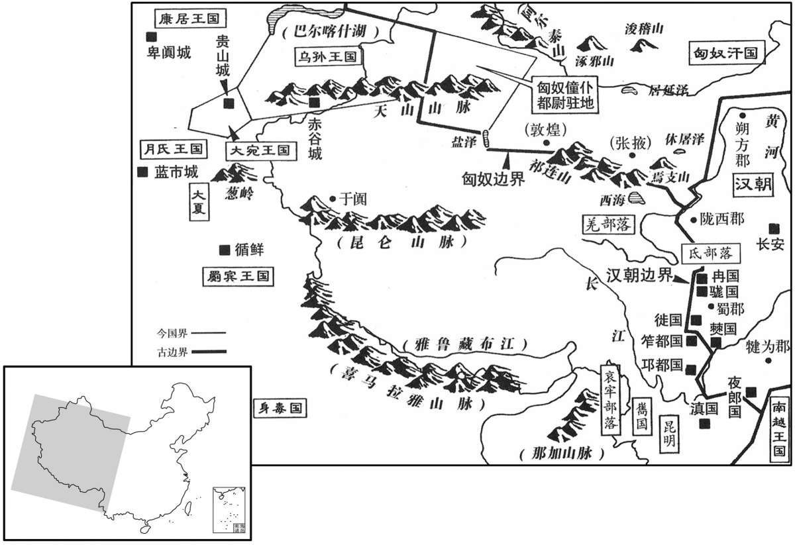
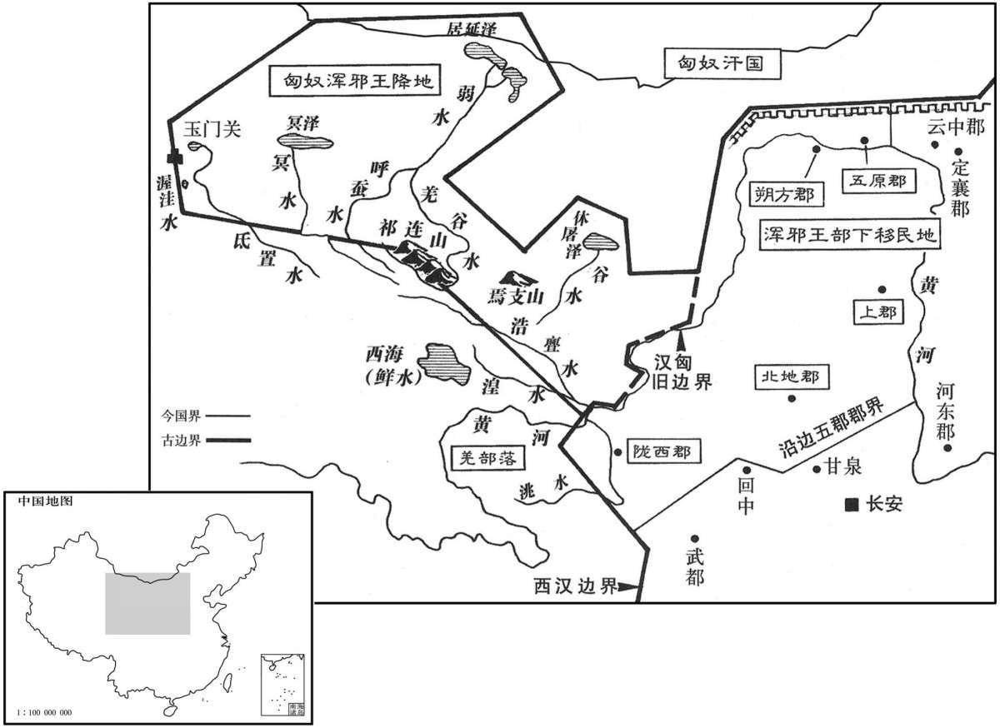
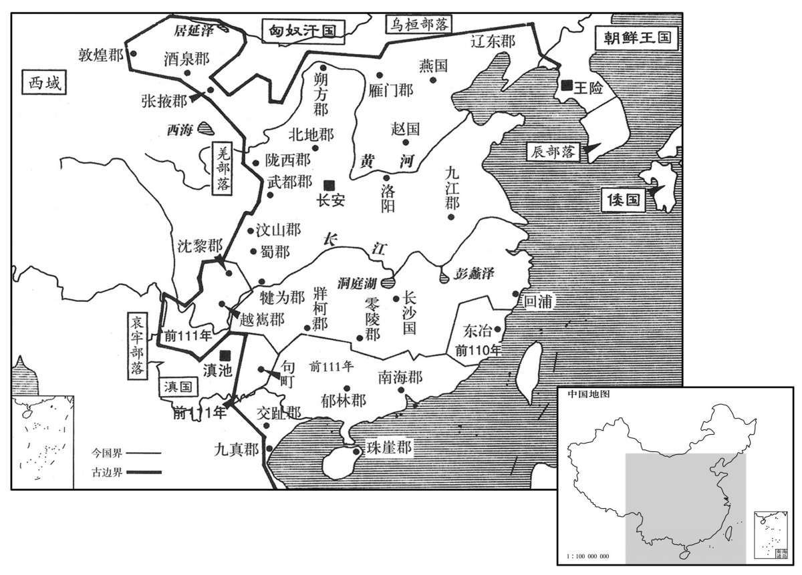
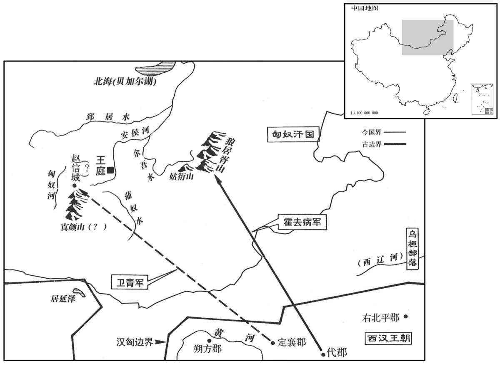

卷次与人物目录 / 卷19
资治通鉴 · 卷第十九【汉纪十一】
公元前124年至公元前119年 · 原文、白话与胡三省注
本页按胡注本编排保存全卷内容。白话采用本站所据译本，未可靠对应的内容另列说明；事件标题用于定位，并非原书文字。
本卷共77段原文，77段有译文对应，0段缺译或待核对。
卷第十九【汉纪十一】起强圉大荒落（丁巳），尽玄黓淹茂（壬戌），凡六年。
卷首原文与注释
世宗孝武皇帝中之上
公元前124年 · 汉世宗孝武皇帝元朔五年
元朔五年〔（丁巳、前一二四）〕
本年事件索引（现代整理）
冬，十一月，乙丑，薛泽免。以公孙弘为丞相，封平津侯。〔勃海郡高成县有平津乡。宋白曰：沧州盐山县，勃海高成县也，有平津乡。考异曰：史记将相名臣表、汉书公卿百官表，弘为相皆在今年。建元以来侯者表、恩泽侯表皆云“元朔三年封侯”。按三年弘始为御史大夫。盖误书“五”为“三”，因置于三年耳。〕丞相封侯自弘始。〔汉初常以列侯为丞相，弘则既相而后封侯，故丞相封侯自弘始。〕
冬季，十一月乙丑（初五），汉武帝免除薛泽职务，任命公孙弘为丞相，封为平津侯。担任丞相而封侯，是从公孙弘开始的。
时上方兴功业，弘于是开东合以延贤人，〔师古曰：合，小门也；东向开之，避当庭门而引客，别于掾史官属也。〕与参谋议。每朝觐奏事，因言国家便宜，上亦使左右文学之臣与之论难。〔难，乃旦翻。〕弘尝奏言：“十贼彍弩，〔张晏曰：彍，音郭。师古曰：引满曰彍。〕百吏不敢前。请禁民毋得挟弓弩，便。”上下其议。〔下，遐嫁翻。〕侍中吾丘寿王对曰：“臣闻古者作五兵，〔师古曰：五兵，谓矛、戟、弓、剑、戈。吾，读曰虞。〕非以相害，以禁暴讨邪也。秦兼天下，销甲兵，折锋刃；其后民以耰鉏、棰梃相挞击，〔师古曰：耰，摩田之器也。棰，马挝也。梃，大杖也。折，而设翻。耰，音忧。梃，大鼎翻。挞，音闼。〕犯法滋众，盗贼不胜，〔师古曰：滋，益也。不胜，言不可胜也。〕卒以乱亡。〔卒，子恤翻。〕故圣王务教化而省禁防，知其不足恃也。礼曰：『男子生，桑弧、蓬矢以举之，』明示有事也。〔记内则：国君世子生三日，射人以桑弧、蓬矢六射天地四方。注云：天地四方，男子之所有事也。〕大射之礼，自天子降及庶人，三代之道也。〔古者天子射豹侯，诸侯射熊侯，卿大夫射麋侯，士射鹿侯、豕侯。周官又以乡射之礼询众庶。〕愚闻圣王合射以明教矣，未闻弓矢之为禁也。且所为禁者，为盗贼之以攻夺也；〔为盗之为，于伪翻。〕攻夺之罪死；然而不止者，大奸之于重诛，固不避也。臣恐邪人挟之而吏不能止，良民以自备而抵法禁，〔师古曰：抵，触也。〕是擅贼威而夺民救也。窃以为大不便。”书奏，上以难弘，弘诎服焉。〔难，乃旦翻。诎，与屈同。〕
当时汉武帝正在大规模建功立业，于是公孙弘开辟相府东门作为延揽人才的场所，与他们共同探讨国家大事。每当上朝奏事，便将于国家有益的见解奏闻朝廷，汉武帝也常常命身边的文学之臣与公孙弘进行辩论。公孙弘曾经上奏说：“十个强盗拉满了弓，能使上百名官吏不敢向前。请下令禁止老百姓携带弓箭，以利于地方治安。”汉武帝将此建议交朝臣讨论。侍中吾丘寿王表示反对，言道：“我听说古代人制造出五种兵器，并不是为了相互攻杀，而是用来制止暴力、诛讨邪恶。秦朝兼并天下，销毁兵甲，折断刀锋，后来老百姓用农具、棍棒等相互攻击，犯法之人日益增多，盗贼防不胜防，终因大乱而亡。因此，圣明的君主对百姓以教育感化为主，而减少防范和禁令，知道那是靠不住的。《礼记》上说：‘男孩诞生，用桑木制成的弓、蓬草杆制成的箭射天地四方。’以表明男子事业所在。大射之礼，上自天子，下到百姓都要遵守，这是夏、商、周三代的传统。我听说圣明的君主用射礼教化百姓，没听说过禁止携带弓箭的。况且禁止使用弓箭的原因，是为了防止盗贼用弓箭攻杀和劫掠。攻杀、劫掠是死罪，却不能禁绝，说明那些大奸大恶之徒对重刑并不退避。我恐怕坏人持弓箭害人而地方官吏不能禁止，平民百姓却会因用弓箭自卫而触犯法律，这是助长坏人气焰而剥夺百姓的自救手段。我认为这是很不妥当的。”奏章呈递上去，汉武帝以此诘问公孙弘，公孙弘无言答对。
弘性意忌，外宽内深；诸尝与弘有隙，无近远，虽阳与善，后竟报其过。董仲舒为人廉直，以弘为从谀，弘嫉之。胶西王端骄恣，数犯法，〔端，景帝子，前三年受封。数，所角翻；下同。〕所杀伤二千石甚众。弘乃荐仲舒为胶西相；仲舒以病免。汲黯常毁儒，面触弘，弘欲诛之以事，〔以事致其罪而诛之。〕乃言上曰：“右内史界部中多贵臣、宗室，难治，非素重臣不能任，请徙黯为右内史。”〔右内史后为右扶风。治，直之翻。任，音壬。〕上从之。
公孙弘生性好猜忌，外表宽厚而内里心机很深。凡是曾经与他不合的人，不论关系远近，虽然表面上装作友善，后来终究要予以报复。董仲舒为人清廉正直，认为公孙弘阿谀奉承，引起公孙弘的嫉恨。胶西王刘端骄横放纵，多次违犯法令，杀伤国中二千石官多人。于是公孙弘推荐董仲舒为胶西国相，董仲舒因病而得免。汲黯经常诋毁儒生，当面触犯公孙弘，公孙弘想找借口将其杀死，便向汉武帝建议：“右内史管界居住着很多显贵的大臣、皇室子弟，难于治理，不是平素有威望的大臣不能胜任，请让汲黯改任右内史。”汉武帝听从了他的建议。
春，大旱。
春季，发生严重旱灾。
匈奴右贤王数侵扰朔方。天子令车骑将军青将三万骑出高阙，卫尉苏建为游击将军，左内史李沮为强弩将军，〔沮，音俎。〕太仆公孙贺为骑将军，代相李蔡为轻车将军，皆领属车骑将军，俱出朔方；大行李息、岸头侯张次公为将军，俱出右北平；凡十余万人，击匈奴。贤王以为汉兵远，不能至，饮酒，醉。卫青等兵出塞六七百里，夜至，围右贤王。右贤王惊，夜逃，独与壮骑数百驰，溃围北去。得右贤裨王十余人，〔师古曰：裨王，小王也，犹言裨将也。裨，频移翻。〕众男女万五千余人，畜数十百万，〔师古曰：数十万以至百万。畜，许救翻。〕于是引兵而还。
匈奴右贤王多次率兵侵扰朔方郡。汉武帝任命车骑将军卫青率兵三万自高阙出塞，任命卫尉苏建为游击将军，左内史李沮为强弩将军，太仆公孙贺为骑将军，代相李蔡为轻车将军，他们都归车骑将军统属，一同率兵自朔方出塞；命大行李息、岸头侯张次公为将军，一同自右北平出塞，共调集了十几万人出击匈奴。匈奴右贤王认为汉军距自己路途遥远，不可能到达，经常饮酒而醉，毫不戒备。卫青等率兵出边塞六七百里，乘夜赶到，将右贤王大营团团包围。右贤王大惊，乘夜而逃，只率数百名精壮骑兵冲出包围圈向北逃奔。此战共俘获右贤王手下各部首领十余人，匈奴男女部众一万五千余人，牲畜近百万头，汉军于是班师回朝。
至塞，天子使使者持大将军印，即军中拜卫青为大将军，诸将皆属焉。夏，四月，乙未，复益封青八千七百户，〔复，扶又翻。〕封青三子伉、不疑、登皆为列侯。〔师古曰：伉，音杭，又工郎翻。伉为宜春侯，不疑为阴安侯，登为发干侯。〕青固谢曰：〔师古曰：固，谓再三也。〕“臣幸得待罪行间，〔行，户刚翻。〕赖陛下神灵，军大捷，皆诸校尉力战之功也。陛下幸已益封臣青；臣青子在襁褓中，未有勤劳，上列地封为三侯，〔“列”，汉书作“裂”。〕非臣待罪行间所以劝士力战之意也。”天子曰：“我非忘诸校尉功也。”乃封护军都尉公孙敖为合骑侯，〔晋灼曰：合骑侯，犹冠军、从票之名也。余据功臣表，合骑侯食邑于渤海高成。〕都尉韩说为龙頟侯，〔班志，龙頟，侯国，属平原郡。頟，音洛。〕公孙贺为南窌侯，〔窌，匹孝翻，又普孝翻。〕李蔡为乐安侯，〔“乐安”，功臣表作“安乐”，食邑于琅邪之昌县。〕校尉李朔为涉轵侯，〔“涉轵”，班史卫青传作“陟轵”，功臣表作“轵”，食邑于齐郡之西安。〕赵不虞为随成侯，〔随成侯，功臣表，食邑于千乘县。〕公孙戎奴为从平侯，〔从平侯，食邑于东郡乐昌。〕李沮、李息及校尉豆如意〔班史“豆”作“窦”。〕皆赐爵关内侯。
卫青率军回至边塞，汉武帝派使臣带着大将军印信来到， 在军中只拜卫青为大将军，各路将领皆归卫青统领。到该年夏季四月乙未（初八），又加封卫青食邑八千七百户，并将他的三个儿子卫伉、卫不疑、卫登都封为列侯。卫青坚决辞谢，说道：“我有幸能够在军中效力，仰仗陛下的神灵，获得大胜，全都是诸位校尉奋力作战的功劳。陛下已增加了我的封邑，我的儿子还在襁褓之中，并无功劳，陛下却要划出土地封他们三人为侯，这就不是我效力军中，鼓励将士奋力战斗的本意了。”汉武帝说道：“我并没有忘记诸位校尉的功劳。”于是，封护军都尉公孙敖为合骑侯，都尉韩说为龙侯，公孙贺为南侯，李蔡为乐安侯，校尉李朔为涉轵侯，赵不虞为虽随成侯，公孙戎奴为从平侯，李沮、李息及校尉豆如意都被封为关内侯。
于是青尊宠，于群臣无二，公卿以下皆卑奉之，独汲黯与亢礼，〔亢，音抗。〕人或说黯曰：“自天子欲群臣下大将军，〔说，式芮翻。师古曰：下，户嫁翻。〕大将军尊重，君不可以不拜。”黯曰：“夫以大将军有揖客，反不重邪！”〔师古曰：言能降贵以礼士，最为重也。〕大将军闻，愈贤黯，数请问国家朝廷所疑，〔数，所角翻。〕遇黯加于平日。大将军青虽贵，有时侍中，上踞厕而视之；〔如淳曰：厕，溷也。孟康曰：厕，床边侧也。师古曰：如说是也。仲冯曰：厕，当从孟说。古者见大臣则御坐为起；然则踞厕者轻之也。〕丞相弘燕见，上或时不冠；至如汲黯见，〔见，贤遍翻。〕上不冠不见也。上尝坐武帐中，〔应劭曰：武帐，织成帐为武士象也。孟康曰：今御武帐置兵，阑五兵于帐中也。师古曰：孟说是。韦昭曰：以武名之，示威。〕黯前奏事，上不冠，望见黯，避帐中，使人可其奏。其见敬礼如此。
当时，汉武帝对卫青的尊崇宠信超过了任何一位朝廷大臣，三公、九卿及以下官员都对卫青卑身奉承，唯独汲黯用平等的礼节对待卫青。有人劝汲黯说：“皇上想让群臣全都居于大将军之下，大将军地位尊贵，您不可以不下拜。”汲黯说：“以大将军身份而有长揖不拜的平辈客人，大将军反而不尊贵了吗！”卫青得知，越发觉得汲黯贤明，多次向汲黯请教国家和朝廷的疑难大事，对待他比平日更为尊重。卫青虽然地位尊贵，但有时入宫，汉武帝就坐在床边接见他；丞相公孙弘大汉武帝空闲时谒见，没武帝有时不戴帽子；至于汲黯谒见时，汉武帝没戴上帽子就不接见。有一次，汉武帝正坐在陈列兵器的帐中，汲黯前来奏事，汉武帝当时没戴帽子，远远望见汲黯，急忙躲入后帐，派人传话，批准汲黯所奏之事。汲黯受到的尊重和礼敬就是这样的。
夏，六月，诏曰：“盖闻导民以礼，风之以乐。〔师古曰：风，教也。诗序曰：上以风化下。〕今礼坏、乐崩，朕甚闵焉。其令礼官劝学兴礼以为天下先！”于是丞相弘等奏：“请为博士官置弟子五十人，复其身；〔为，于伪翻。复，方目翻。〕第其高下，以补郎中文学掌故；〔儿宽以射策为掌故，功次补廷尉文学卒史。苏林曰：卒史秩六百石。臣瓒曰：汉注，卒史秩百石。师古曰：瓒说是。余谓掌故，掌故府之典籍者也。以儿宽自掌故补卒史推之，则掌故之品秩从可知也。〕即有秀才异等，辄以名闻；〔秀才异等，谓有俊秀之才异于常等者。〕其不事学若下材，辄罢之。又，吏通一艺以上者，请皆选择以补右职。”〔吏，谓百石已上及比百石以下也。右职，谓中二千石、二千石之卒史也。〕上从之。自此公卿、大夫、士、吏彬彬多文学之士矣。
夏季，六月，汉武帝颁布诏书说：“据说，对百姓应以礼引导，用乐教化。现在礼已败坏，乐已丧失，朕非常忧虑。命令负责礼教的官员劝导百姓学习，振兴礼教，为天下树立榜样！”于是，丞相公孙弘等上奏说：“请为博士官设置弟子五十人，免除他们的赋税、徭役，排列品学的高低，分别派充郎中、文学、掌故等官。如有异常优秀者，则提名推荐；对那些不学无术的庸材，则予以罢黜。再有，凡低级官员中有一种以上专长的，请全部选拔出来， 采汉武帝纳了公孙弘的建议，从此，公卿、大夫、士以及一般官吏，有学问的人越来越多。
秋，匈奴万骑入代，杀都尉朱英，略千余人。
秋季，一万余名匈奴骑兵侵入代郡，杀死都尉朱英，掳掠百姓一千余人。
初，淮南王安，好读书属文，喜立名誉，〔好，呼到翻。属，之欲翻。喜，许记翻。〕招致宾客方术之士数千人。其群臣、宾客，多江、淮间轻薄士，常以厉王迁死感激安。〔迁死见十四卷文帝前六年。〕建元六年，彗星见，〔彗，祥岁翻，又徐醉翻，又旋芮翻。见，贤遍翻。〕或说王曰：“先吴军时，彗星出，长数尺，然尚流血千里。〔说，式芮翻。先，悉荐翻。长，直亮翻。谓吴王濞起兵时也。〕今彗星竟天，天下兵当大起。”王心以为然，乃益治攻战具，积金钱。〔治，直之翻；下同。〕
当初，淮南王刘安喜欢读书做文章，又爱沽名钓誉，罗致四方宾客和各种技能之士数千人。他的臣僚、宾客，大多是江、淮一带的轻薄之徒，常常用厉王刘长在流放途中死于非命一事刺激刘安。建元六年时，天空出现彗星，有人向刘安游说道：“以前，吴王刘濞起兵时，彗星出现，长仅数尺，尚且流血千里。如今彗星贯穿天际，恐怕天下将有大规模战事发生。”刘安认为说得有道理，就加紧制造进攻性的武器，积好金钱。
郎中雷被获罪于太子迁，〔雷被善用剑，与太子戏，误中太子，故得罪。师古曰：被，皮义翻。姓谱：雷，古方雷氏后。〕时有诏，欲从军者辄诣长安，被即愿奋击匈奴。太子恶被于王，〔恶，毁恶也，如字。〕斥免之，欲以禁后。〔师古曰：令后人更不敢效之也。〕是岁，被亡之长安，上书自明。事下廷尉治，〔下，遐嫁翻。〕踪迹连王，公卿请逮捕治王。太子迁谋令人衣卫士衣，持戟居王旁，汉使有非是者，即刺杀之，〔人衣，于既翻。刺，七亦翻。〕因发兵反。天子使中尉宏即讯王，〔师古曰：即，就也，就问也。〕王视中尉颜色和，遂不发。公卿奏：“安壅阏奋击匈奴者，格明诏，当弃市。”〔阏，音遏。师古曰：格，音阁，谓阁止不行之。〕诏削二县。既而安自伤曰：“吾行仁义，反见削地。”耻之，于是为反谋益甚。
朗中雷被得罪了淮南王的太子刘迁，此时，汉武帝正颁下诏书，让有志参军报国的人到长安来应征，于是雷被表示愿意参军去打匈奴。但因刘迁在淮南王面前说了雷被的坏话，所以刘安将雷被斥责了一顿，并将其免职，以防止其他人效法。就在这一年，雷被逃到长安，上书朝廷说明自己的冤情。汉武帝将此事交给廷尉处理，因牵连到淮南王，公卿请求将刘安逮捕治罪。太子刘迁定计，让人身穿卫士服装，手持长戟站在淮南王刘安身边，如果朝廷派来的使者欲将淮南王治罪，则就立即将其刺杀，然后举兵反叛。汉武帝派中尉段宏到淮南王处询问有关情况，淮南王见段宏神色平和，于是没有发动。公卿大臣奏称：“刘安拒绝有志奋击匈奴的壮士的请求，是犯了阴碍圣旨的大罪，应当众斩首。”汉武帝下诏削减淮南国的两个县。事后，刘安自怨自艾说：“我做仁义之事，反而被削减封地。”他以此为耻，于是谋反的准备越发加紧了。
安与衡山王赐相责望，礼节间不相能。〔赐，即安之弟也，孝文十六年与安同受封。师古曰：兄弟相责，故有嫌。〕衡山王闻淮南王有反谋，恐为所并，亦结宾客为反具，以为淮南已西，欲发兵定江、淮之间而有之。衡山王后徐来谮太子爽于王，欲废之而立其弟孝。王囚太子而佩孝以王印，令招致宾客。宾客来者微知淮南、衡山有逆计，日夜从容劝之。〔从，千容翻。〕王乃使孝客江都人枚赫、陈喜作輣车、锻矢，〔輣，薄庚翻，兵车也，楼车也。锻，都元翻，冶铁也。〕刻天子玺、将相军吏印。秋，衡山王当入朝，过淮南；淮南王乃昆弟语，〔师古曰：为相亲爱之言。〕除前隙，约束反具。〔师古曰：共契约为反具。〕衡山王即上书谢病，上赐书不朝。
刘安与衡山王刘赐在礼节方面相互指责，不能相容。 刘赐听说刘安有反叛朝廷的打算，害怕被刘安吞并，便也结交宾客，置备武器，打算在淮南王西进以后，要发兵攻下长江、淮河之间的地区，并占有他们。衡山王王后徐来在刘赐而前诋毁太子刘爽，企图废掉刘爽，改立刘爽之弟刘孝为太子。刘赐囚禁了刘爽，将衡山王印信交给刘孝，命刘孝延揽宾客。前来投效的宾客们隐约了解到刘安，刘赐的谋反计划，便日夜慢慢地劝刘赐起事。于是，刘赐命刘孝门下宾客江都人枚赫、陈喜造战车、锻箭矢，雕刻天子印玺和文武官员的印信。这年秋季，刘赐照例应入朝谒见皇帝，途经淮南国，刘安与他用亲兄弟的语言交谈，消除了已往的矛盾，约定共同反叛朝廷。于是刘赐上书朝廷，借口有病，不肯入朝。汉武帝赐书信给他，允许他不来朝见。
公元前123年 · 汉世宗孝武皇帝元朔六年
元朔六年〔（戊午、前一二三）〕
本年事件索引（现代整理）
春，二月，大将军青出定襄，击匈奴；〔杜佑曰：汉定襄郡在今马邑北三百余里，后魏置云中郡。〕以合骑侯公孙敖为中将军，太仆公孙贺为左将军，翕侯赵信为前将军，〔功臣表，翕，侯国，在魏郡内黄界。〕卫尉苏建为右将军，郎中令李广为后将军，左内史李沮为强弩将军，〔师古曰：沮，音俎。〕咸属大将军；斩首数千级而还，〔贤曰：秦法，斩首一，赐爵一级，故因谓斩首为级。〕休士马于定襄、云中、雁门。
春季，二月，大将军卫青率兵自定襄郡出塞北击匈奴，汉武帝命合骑侯公孙敖为中将军、太仆公孙贺为左将军、翕侯赵信为前将军、卫尉苏建为右将军、郎中令李广为后将军、左内史李沮为强弩将军，全都归大将军卫青统领，斩杀匈奴数千人后班师，在定襄、云中、雁门一带休养兵马。
赦天下。
大赦天下。
夏，四月，卫青复将六将军出定襄，击匈奴，〔复，扶又翻。〕斩首虏万余人。右将军建、前将军信并军三千余骑独逢单于兵，与战一日余，汉兵且尽。信故胡小王，降汉，汉封为翕侯，〔信，元光四年十月壬午受封。〕及败，匈奴诱之，遂将其余骑可八百降匈奴。〔诱，音酉。将，即亮翻。降，户江翻。〕建尽亡其军，脱身亡，自归大将军。
夏季，四月，卫青再次率领公孙敖等六位将军自定襄出击匈奴，斩杀及俘虏匈奴一万余人。右将军苏建与前将军赵信合并了部队，共有骑兵三千余人，单独与匈奴单于亲自统帅的部队相遇，经过一天多的交战，汉军伤亡殆尽。赵信本是胡人的一位部落首领，投降汉朝后被封为翕侯。及至此次兵败，匈奴引诱他投降，便率领本部所余骑兵约八百人投降了匈奴。苏建全军覆没，脱身逃走独自返回卫青大营。
议郎周霸曰：〔班表：议郎属郎中令，秩比六百石。〕“自大将军出，未尝斩裨将。今建弃军，可斩，以明将军之威。”军正闳、长史安曰：“不然。〔凡军行置军正，掌举军法以正军中。军法曰：正无属将军，将军有罪以闻。刘昭志：大将军长史秩千石。如淳曰：律：都军官长史一人。〕兵法：『小敌之坚，大敌之禽也。』〔孙子之言，言大小不敌，小虽坚于战，终必为大所禽。〕今建以数千当单于数万，力战一日余，士尽，不敢有二心，自归，而斩之，是示后无反意也，不当斩。”大将军曰：“青幸得以肺腑待罪行间，不患无威，而霸说我以明威，甚失臣意。〔言失为臣之意也。行，户刚翻。说，式芮翻。〕且使臣职虽当斩将，〔将，即亮翻。〕以臣之尊宠而不敢〔【章：十四行本“敢”下有“自”字；乙十一行本同。】〕擅诛于境外，而具归天子，天子自裁之，于以见为人臣不敢专权，不亦可乎？”军吏皆曰：“善！”遂囚建诣行在所。〔蔡邕独断曰：天子以四海为家，故谓所居为行在所。〕
议郎周霸言道：“自大将军出师以来，还从未斩过一位部将。 如今苏建丢充了本部人马，应将其处死，以示大将军的权威。”军正闳、长史安说：“不对。兵法上说：‘小部队的战斗力再强，也会被大部队击败。’此次苏建以数千人马抵挡匈奴单于好几万人，奋战了一天多，将士伤亡殆尽，而苏建不敢有二心，独自返回。将其斩首，就等于告诉以后的将领战败不能返回，所以不应杀苏建。”卫青说：“我有幸以皇上近亲身分统领大军，不怕没有权威，周霸劝我杀苏建来显示权威，是很不符合为人臣的本分的，况且，即使我有权处决将领，作为大臣，地位尊贵，又深受皇上的宠信，却也不敢擅自大诛杀大将于国境之外。而将此事全部交给皇上。由皇上亲自裁决，以显示做人臣的不敢专权，不也很好吗？”部下军官一致说“好！”于是将苏建囚禁起来，送到汉武帝所在的地方。
初，平阳县吏霍仲孺给事平阳侯家，与青姊卫少儿私通，生霍去病。〔霍姓，以国为氏。〕去病年十八，为侍中，善骑射，再从大将军击匈奴，为票姚校尉，〔服虔曰：票姚，音飘摇。师古曰：票，匹妙翻。姚，羊召翻。票姚，劲疾之貌。荀悦汉纪作“票鹞”字。去病后为票骑将军，尚取票姚之字耳。今读者音飘摇，则不当其义也。〕与轻骑勇八百，直弃大军数百里赴利，斩捕首虏过当。〔师古曰：计其所将人数，则捕斩首为多，过于所当。一曰：汉军失亡者少，而杀获匈奴数多，故曰过当也。〕于是天子曰；“票姚校尉去病，斩首虏二千余级，得相国、当户，斩单于大父行藉若侯产，生捕季父罗姑，〔匈奴左、右大当户，在左、右大都尉之下，左、右骨都侯之上。大父行，单于祖行也。张晏曰：藉若，胡侯也，产，其名也。师古曰：此人，单于祖父之行也。季父，亦单于季父也，罗姑，其名。行，户浪翻。〕比再冠军，〔师古曰：比，频也。比，毗至翻。冠，古玩翻。〕封去病为冠军侯。〔帝以去病功冠诸军，以南阳穰县卢阳乡、宛县临駣聚为冠军侯国。駣，音，桃。〕上谷太守郝贤四从大将军，捕斩首虏二千余级，封贤为众利侯。”〔姓谱：殷帝乙有子期，封太原郝乡，后因氏焉。功臣表，众利侯食邑于琅邪郡姑幕县。〕
当初，平阳县小吏霍仲孺在平阳侯曹寿家做事， 与卫青的姐姐卫少私通，生下霍去病。霍去病十八岁时当了侍中，精通骑马、射箭之术。在第二次随卫青出击匈奴时，霍去病身为票姚校尉，率领八百名轻骑勇士，一直把大军抛弃到数百里之后去寻找战机，其斩杀和俘获的匈奴人数超过己方的损失。于是，汉武帝说：“票姚校尉霍去病斩杀及俘获匈奴二千余人，生擒匈奴的相国、当户，杀死匈奴单于祖父辈的藉若侯栾提产，活捉单于叔父栾提罗姑，战功屡次冠于全军，封霍去病为冠军侯。上谷太守郝贤四次跟随大将军出征，其斩杀、擒获匈奴二千余人，封郝贤为众利侯。”
是岁，失两将军，亡翕侯，军功不多，故大将军不益封，止赐千金。右将军建至，天子不诛，赎为庶人。
这一年，失去了两位将军，翕侯赵信投降了匈奴，军功也不多， 所以汉武帝没有增加卫青的食邑，只赏给他千金。右将军苏建被解到长安，汉武帝没有诛杀他。苏建在赎身后成为平民。
单于既得翕侯，以为自次王，〔师古曰：自次者，尊重次于单于。〕用其姊妻之，〔妻，七细翻。〕与谋汉。信教单于益北绝幕，〔师古曰：直度曰绝，幕，与漠同。阴山以北皆大汉，不生草木。〕以诱罢汉兵，徼极而取之，〔师古曰：罢，读曰疲。徼，要也。诱令疲，徼其困极，然后取之。徼，一遥翻。〕无近塞。单于从其计。〔近，其靳翻。〕
匈奴单于得到赵信后，封其为自次王，又将自己的姐姐嫁给赵信为妻，与他商讨对付汉朝的方略。赵信建议单于进一步向北移动，穿过沙漠，以引诱汉军，使汉军疲劳，待到汉军极度疲劳时，再乘机攻取，不必接近汉朝边塞，单于听从了赵信的计谋。
是时，汉比岁发十余万众击胡，〔比，毗至翻。〕斩捕首虏之士受赐黄金二十余万斤，而汉军士马死者十余万，兵甲转漕之费不与焉。〔与，读，曰预。〕于是大司农经用竭，不足以奉战士。六月，诏令民得买爵及赎禁锢，免臧罪。置赏官，名曰武功爵，级十七万，凡直三十余万金。诸买武功爵至千夫者，得先除为吏。〔禁锢，重系也。臣瓒曰：茂陵中书有武功爵：一级曰造士，二级曰闲舆卫，三级曰良士，四级曰元戎士，五级曰官首，六级曰秉铎，七级曰千夫，八级曰乐卿，九级曰执戎，十级曰政戾庶长，十一级曰军卫：此武帝所制，以宠军功。师古曰：下云“级十七万，凡直三十余万金”;今瓒引茂陵中书，说之不尽也。贡父曰：直三十余万金，其价之差殊不可详也。或说：“七”当作“一”，与茂陵书合矣。余谓卖爵当级，级稍增其价，岂可例云级十七万！若每级十七万，比至三十余万金，当一万七千余级，又非也。然则误衍此“万”字。盖武功爵，其级十七，参考颜、刘注，皆因求其说而不得，遂疑茂陵书所谓十一级为不足，又疑史之正文“万”字为衍，皆未为允也。盖级十七万者，卖爵一级为钱十七万，至二级则三十四万矣，自此以上，乌得不每级而增乎！王莽时黄金一斤直钱万，以此推之，则三十万金为钱三十余万万矣，此当时鬻武功爵所直之数也。夫民入钱买爵，随其钱之多少为爵级之高下，爵之高下有定直，而民钱之多少无定数，若比而同之，其失弥远矣。史记作”直八十万金”，索隐曰：一金万钱，初一级十七万，自此以上每级加二万，至十七级合成三十四万也。〕吏道杂而多端，官职耗废矣。〔师古曰：耗，乱也，莫报翻。〕
当时，汉朝连年征调十几万人出击匈奴，曾斩杀或俘获敌人的将士， 被赏赐黄金二十余万斤，而汉军兵士马匹死亡也达十几万，还不算兵器衣甲和往前方运送粮草的费用。因此，大司农府库枯竭，无法供应军需。六月，汉武帝颁下诏书，允许百姓出钱买爵和以钱免除禁锢，也可以交钱免除盗财贪赃之罪。又设“赏官”，称为“武功爵”，第一级为铜钱十七万枚，以上递增，共值黄金三十余万斤。凡购买武功爵至“千夫”的人，可以优先被任命为官吏。从此，作官的途径变得既杂且多，官职就混乱败坏了。
译本所载内容待核对（不作白话）
汉武帝元朔六年（公戊午、元前123年）
公元前122年 · 汉世宗孝武皇帝元狩元年
元狩元年〔（己未、前一二二）〕
本年事件索引（现代整理）
冬，十月，上行幸雍，祠五畤，〔雍，于用翻。畤，音止。〕获兽，一角而足有五蹄。有司言：“陛下肃祗郊祀，上帝报享，锡一角兽，盖麟云。”〔麟，麋身，牛尾，马足，五色，圜蹄，一角，角端有肉，音中钟吕，行中规矩，游必择地，详而后处，不履生虫，不践生草，不群居，不侣行，不入陷穽，不罹罗网，王者至仁则出。今并州界有麟，大小如鹿，非瑞应麟也。京房易传曰：麟，麕身，牛尾，马蹄，有五采，腹下黄，高丈二。尔雅：麟，麕身，牛尾，一角。盖麟似麕，圆顶一角。曰“盖”云者，意其为麟而未知其果为麟也。〕于是以庆〔【章：十四行本“庆”作“荐”；乙十一行本同。】〕五畤，畤加一牛，以燎。〔畤，音止。〕久之，有司又言：“元宜以天瑞命，不宜以一二数，一元曰建，二元以长星曰光，今元以郊得一角兽曰狩云”。于是济北王〔济北王勃，淮南厉王子，孝文十六年，封衡山王，孝景四年，徙封济北；今王，勃子成王胡也。济北王，都卢，后天汉四年，国除，入汉为泰山郡。济，子礼翻。〕以为天子且封禅，上书献泰山及其旁邑；天子以他县偿之。
冬季，十月，汉武帝巡幸至雍，祭祀于王，捉到一头长有一只角、五个蹄子的怪兽，主管官员奏道：“陛下祭祀虔诚，上帝作为回报，赐陛下独角之兽，这大概就是麒麟。”于是将独角兽献于五祭坛，每个祭坛加上一头牛，一齐烧烤。过了一段时间，主管官员又奏道：“帝王的年号应用上天所降的祥瑞定名，而不宜使用一、二等数目字，陛下第一个年号称‘建’，第二个年号因长星出现而称‘光’，此次郊祀得到一头独角兽，所以应称‘狩’。”当时，济北王刘胡认为皇上将要前往泰山封禅，祭祀天地，便上书朝廷，表示愿献出泰山及其周围城邑。汉武帝将别的县划给他作为补偿。

本年形势与背景参考图
淮南王安与宾客左吴等日夜为反谋，〔姓谱：齐之公族有左、右公子，后因氏焉。余按卫亦有左、右公子，姓谱之说非是。鲁有左丘明。〕按舆地图，〔苏林曰：舆，犹尽载之意。索隐曰：志林云：舆地图，汉家所画，非出远也。〕部署兵所从入。诸使者道长安来，为妄言，言“上无男，汉不治”，即喜；即言“汉廷治，有男”，王怒，以为妄言，非也。〔治，直吏翻。〕
淮南王刘安与其门客左吴等日夜加紧谋反准备，察看地图，部署进兵的路线。刘安派往朝廷的使者们从长安回来，谎称说“皇上没有儿子，且朝政腐败”，他就高兴；如果说“汉廷政治清明，皇上有儿子”，他就生气，认为是胡言。
王召中郎伍被〔被，皮义翻。姓谱，伍姓，出于楚伍举。〕与谋反事，被曰：“王安得此亡国之言乎？臣见宫中生荆棘，露沾衣也！”王怒，系伍被父母，囚之。三月，复召问之，〔复，扶又翻。〕被曰：“昔秦为无道，穷奢极虐，百姓思乱者十家而六七。高皇帝起于行陈之中，〔行，户刚翻。陈，读曰阵。〕立为天子，此所谓蹈瑕候间，〔间，古苋翻。〕因秦之亡而动者也。今大王见高皇帝得天下之易也，〔易，以豉翻。〕独不观近世之吴、楚乎！〔事见十五卷景帝三年。〕夫吴王王四郡，〔四郡：东阳郡、鄣郡、吴郡、豫章郡。王王，下于况翻。〕国富民众，计定谋成，举兵而西；然破于大梁，〔谓为梁孝王所破也。〕奔走而东，身死祀绝者何？诚逆天道而不知时也。方今大王之兵，众不能十分吴、楚之一，天下安宁，万倍吴、楚之时，大王不从臣之计，今见大王弃千乘之君，赐绝命之书，为群臣先死于东宫也。”〔如淳曰：东宫，淮南所居也。〕王涕泣而起。
刘安召来中郎伍被，与他商议谋反之事， 伍被说道：“大王您怎么能有这种亡国的言论呢？我好像已经看到王宫中生满荆棘，露水打湿人衣服的凄惨景象了！”刘安大怒，将伍被的父母逮捕，囚禁了三个月。刘安又将伍被召来询问，伍被说：“当初秦朝无道，极为奢侈暴虐，十分之六七的老百姓都希望天下大乱。高皇帝在行伍中崛起，最终成为天子，这是因为利用对方的缺点、把握时机，趁秦朝土崩瓦解的机会举兴大业。如今大王见到高皇帝得天下容易，却单单不看不久前‘七国之乱’的吴、楚吗！吴王刘濞统辖着四个郡姷牡胤剑腋磺浚丝谥诙啵苊芗苹⒊浞肿急福蟛判吮鹘
然而为什么大梁一战失败，向东逃亡，本人身死，祭祀灭绝？是因为他逆天行事，不知时势。现在，大王的兵力还不足吴、楚的十分之一，而天下的形势却比吴、楚兴兵时安定一万倍。大王如不听从我的劝告，马上就会看到您丢掉千乘之国的王位，接到赐死的命令，先于群臣死在东宫的惨景。”刘安听了，流着眼泪站了起来。
王有孽子不害，最长，〔庶生曰孽。长，知两翻。〕王弗爱，王后、太子皆不以为子、兄数。〔言后不以为子，太子不以为兄。数，秩数也。〕不害有子建，材高有气，常怨望太子，阴使人告太子谋杀汉中尉事，〔事见上，元朔五年。〕下廷尉治。〔下，遐嫁翻。〕
刘安有一个庶出的儿子名叫刘不害，年龄最大。，刘安不喜欢他， 王后不把他当儿子看待，太子刘迁也不将他视为兄长。刘不害有一个儿子叫刘建，才高而气盛，经常对刘迁心怀不满，暗中派人告发刘迁曾企图刺杀朝廷中尉，汉武帝将此事交给廷尉处理。
王患之，欲发，复问伍被曰：〔复，扶又翻。〕“公以为吴兴兵，是邪，非邪？”被曰：“非也。臣闻吴王悔之甚，愿王无为吴王之所悔。”王曰：“吴何知反！汉将一日过成皋者四十余人；今我绝成皋之口，据三川之险，〔汉河南，秦三川郡也，其地当伊、洛、河三川之会。〕招山东之兵，举事如此，左吴、赵贤、朱骄如皆以为什事九成，公独以为有祸无福，何也？必如公言，不可徼幸邪？”〔师古曰：徼，要也。幸，非妄之福也。徼，工尧反。〕被曰：必不得已，被有愚计。当今诸侯无异心，百姓无怨气，可伪为丞相、御史请书，〔言伪为丞相、御史奏请于天子之书。〕徙郡国豪杰高赀于朔方，益发甲卒，急其会日；又伪为诏狱书，〔汉时左右都司空、上林、中都官皆有诏狱，盖奉诏以鞠囚，因以为名。〕逮诸侯太子、幸臣；〔逮，追对狱也。〕如此，则民怨，诸侯惧，即使辩士随而说之，〔说，式芮翻；下同。〕傥可徼幸什得一乎！”王曰：“此可也。虽然，吾以为不至若此。”〔言不须为此也。〕
刘安很害怕，想要举兵谋反，又一次和伍被商量， 说道：“先生认为当初吴王兴兵造反，是对呢，还是不对呢？”伍被道：“不对。我听说吴王后来非常后悔，希望大王不要像吴王那样后悔。”刘安说道：“吴王哪里懂得什么叫造反！当初朝廷的将领一天中有四十余人经过成皋。如今我截断成皋通道，占据三川的险要之地，再征召崤山以东的兵马，在这样的情况下举事，左吴、赵贤、朱骄如等都认为可以有九成把握，只有您认为是有祸无福，这是为什么呢？一定会像你说的那样，不可能侥幸成功吗？”伍被回答说：“如果大王一定要干的话，我有一计。当今各封国国君对朝廷都没有二心，老百姓也没有怨气。大王可以伪造丞相、御史的奏章，说是要请求皇上将各郡、国的豪杰之士和殷实富户迁徙到朔方郡，大量征发士兵，使集合期限紧迫。再伪造诏狱之书，声言要逮捕各封国的太子和宠臣。如此一来，就会百姓怨恨，诸侯恐惧，再派遣能言善道之人接着到各地游说，或许可以侥幸有十分之一的希望吧！”刘安道：“这是可以的。不过我觉得用不着这么麻烦。”
于是王乃作皇帝玺，丞相、御史大夫、将军、军吏、中二千石及旁近郡太守、都尉印，汉使节。〔使，疏吏翻。〕却使人伪得罪而西，〔言使人诈为得罪而逃去，西如京师。〕事大将军，一日发兵，〔一日，犹言一旦。〕即刺杀大将军。〔刺，七亦翻。〕且曰：“汉廷大臣，独汲黯好直谏，〔好，呼到翻。〕守节死义，难惑以非，至如说丞相弘等，如发蒙振落耳！”〔发蒙，谓物所蒙覆，发而去之；振落，谓木叶将落，振而坠之；皆言其易。说，式芮翻。〕
于是，刘安伪造了皇帝印玺和丞相、御史大夫、将军、军吏、 中二千石及周围各郡太守、都尉的印信，并伪造了朝廷使者的信节。又准备派人伪装在淮南国犯罪而西逃长安，投到大将军卫青门下，一旦发兵，立即将卫青刺死。刘安并且说：“朝廷大臣中，只有汲黯喜欢犯颜直谏，能够严守臣节，为忠义而死，难以迷惑，至于游说丞相公孙弘之流，就如同去掉物件上的覆盖物或摇掉树枝上的枯叶一般容易。”
王欲发国中兵，恐其相、二千石不听，王乃与伍被谋，先杀相、二千石。又欲令人衣求盗衣，〔求盗，卒也，掌逐捕盗贼。汉书本纪，高帝时为亭长，令求盗之薛，治竹皮冠。人衣，于既翻。〕持羽檄从东方来，呼曰：“南越兵入界！”〔呼，火故翻。〕欲因以发兵。
刘安打算调动本国的军队，怕相和二千石官员不肯依从， 便与伍被商议，计划先将丞相和二千石官员杀死，同时打算派人身穿治安人员服装，手持告急文书从东边奔来，高喊：“南越国的军队攻入我国边界了！”要以此为借口起兵。
会廷尉逮捕淮南太子，淮南王闻之，与太子谋，召相、二千石，欲杀而发兵。召相，相至，内史、中尉皆不至。王念，独杀相，无益也，即罢相。〔罢，遣出去也。相，息亮翻。〕王犹豫，计未决。太子即自刭，不殊。〔晋灼曰：不殊，不死也。师古曰：言虽自刭而身首不能绝也。刭，古顶翻；下同。〕
就在此时，廷尉前来逮捕淮南国太子刘迁。刘安听到消息后， 与刘迁密谋，召相和二千石官员前来，企图杀死他们，兴兵造反。召相，相一人应召来姷剑谑贰⒅形救炊疾焕础Ａ醢簿醯霉馍毕嘁蝗嗣挥惺裁春么Γ头潘吡恕
刘安犹豫，拿不定主意，刘迁便刎颈自杀，但没有死成。
伍被自诣吏，告与淮南王谋反踪迹如此。吏因捕太子、王、后，围王宫，尽求捕王所与谋反宾客在国中者，索得反具，以〔【章：十四行本“以”下有“闻”字；乙十一行本同；孔本同；退斋校同。】〕上。下公卿治其党与，〔索，山客翻，求也，搜也。以上，时掌翻。下公，户嫁翻。“以上”句断。〕使宗正以符节治王。未至；〔【章：十四行本“至”下有“十一月”三字；乙十一行本同；张校作“十二月”，云“无注本作十一月”。】〕淮南王安自刭。杀王后荼、太子迁，诸所与谋反者皆族。
伍被自己前往廷尉那里，告发与刘安图谋反叛的情节。 廷尉于是派人逮捕了淮南国太子和王后，并且包围王宫，悉数搜捕在淮南国内与淮安王一道谋反的宾客，取得谋反证据后，奏闻朝廷。汉武帝命公卿处治刘安党羽，派宗正手持皇帝符节前往淮南国处治刘安。没等宗正来到，刘安便自刎而死。于是，将淮南王后荼、主子刘迁处死，所有参与谋反计划的人一律灭族。
天子以伍被雅辞多引汉之美，欲勿诛。〔雅，素也。雅辞，素来言语也。〕廷尉汤曰：“被首为王画反计，〔为，于伪翻。〕罪不可赦。”乃诛被。侍中庄助素与淮南王相结交，私论议，王厚赂遗助；〔遗，于季翻。〕上薄其罪，欲勿诛。张汤争，以为：“助出入禁门，腹心之臣，而外与诸侯交私如此；不诛，后不可治。”助竟弃市。
汉武帝因为伍被平常的言论中曾多次赞美朝廷，所以想不杀他。 廷尉张汤说：“伍被首先为淮南王作谋反计划，其罪不能赦免。”于是伍被被杀。侍中庄助平时与淮南王关系密切，二人曾私下议论事情，淮南王还曾送给庄助许多钱物。汉武帝认为这是小罪，想不杀他。但张汤坚持要杀，认为：“庄助出入宫廷是皇上心腹之臣，却外与诸侯如此私交，如不杀庄助，今后类似的事情就不能禁止。”庄助终于被当众斩首。
衡山王上书，请废太子爽，立其弟孝为太子。爽闻，即遣所善白嬴之长安上书，言“孝作輣车、锻矢，与王御者奸”，欲以败孝。〔败，蒲迈翻。〕会有司捕所与淮南王谋反者，得陈喜于衡山王子孝家，吏劾孝首匿喜。〔师古曰：为头首而藏匿之。〕孝闻“律：先自告，除其罪”，即先自告所与谋反者枚赫、陈喜等。公卿请逮捕衡山王治之，王自刭死。王后徐来、太子爽及孝皆弃市，所与谋反者皆族。
衡山王刘赐上奏朝廷，请求废掉太子刘爽，立刘爽之弟刘孝为太子。刘爽听到消息后，立即派他的亲信白嬴到长安上书朝廷，揭发“刘孝私自造兵车、锻箭矢，并与父亲的姬妾通奸”，想除掉刘孝。正好主管官员在逮捕参与淮南王谋反计划的人时，在刘孝家中抓到陈喜，于是参劾刘孝窝藏陈喜。刘孝听说法律规定“先行自首的，可以免除罪责”，便自己先向朝廷告发了共同的密谋反叛枚赫、陈喜等人。公卿大臣奏请汉武帝逮捕衡山王治罪，衡山王自刎而死。王后徐来、太子刘爽及刘孝都被当众斩首，参与谋反计划的人一律灭族。
凡淮南、衡山二狱，所连引列侯、二千石、豪杰等，死者数万人。
总计淮南王和衡山王谋反两案，因受牵连而被处死的列侯、 二千石官员及地方豪侠人物达数万人。
夏，四月，赦天下。
夏季，四月，大赦天下。
丁卯，立皇子据为太子，年七岁。
丁卯（二十一日），汉武帝立皇子刘据为太子，时年七岁。
五月，乙巳晦，日有食之。
五月乙巳晦，（三十日），出现日食。
匈奴万人入上谷，杀数百人。
匈奴军队一万人侵入上谷地区，杀死数百人。
初，张骞自月氏还，〔事见上卷元朔四年。氏，音支。〕具为天子言西域诸国风俗：〔为，于伪翻。〕“大宛在汉正西，可万里。其俗土着，耕田；〔土着，谓有城郭常居，不随水草移徙也。宛，于元翻。着，直略翻。〕多善马，马汗血；〔孟康曰：大宛国有高山，其上有马，不可得，因取五色母马置其下，与集，生驹皆汗血，因号天马子云。一说，汗血者，汗从肩膊出如血，号能一日千里。〕有城郭、室屋，如中国。其东北则乌孙，东则于窴。〔于窴国在南山下，居西城。窴，徒贤翻，又徒见翻。〕于窴之西，则水皆西流注西海，〔水经注：昆仑山西有大水名新头河，度葱岭入北天竺境，又西南流，屈而东南流，迳中天竺国，又西迳安息，南注于雷翥海。雷翥海，即西海也，在安息之西，犁靬之东，东南连交州海。〕其东，水东流注盐泽。〔水经注：河人一源出于窴国南山，北流与葱岭河合，东注蒲昌海。西域传：盐泽，一名蒲昌海，去玉门、阳关三百余里，广袤三百里，其水停居，冬夏不增减，皆以为潜行地下，南出于积石，为中国河云。玉门、阳关皆在敦煌西界。括地志：蒲昌海，一名泑泽，亦名盐泽，亦名辅日海，亦名穿兰，亦名临海，在沙州西南。玉门关，在沙州寿昌县西六里。〕盐泽潜行地下，其南则河源出焉。〔索隐曰：按汉书西南夷传云：河有两源，其一出葱岭，一出于窴。山海经云：河出昆仑东北隅。郭璞云：河出昆仑，潜行地下，至葱岭山于窴国，复分流歧出，合而东注泑泽，巳而复行积石为中国河。泑泽即盐泽也。西域传云：于窴在南山下，与郭璞注山海经不同。广志云：蒲昌海在蒲类海东。唐长庆中，刘元鼎为盟会使，言河之上流，由洪济西南行二千里，水益狭，冬春可涉，夏秋乃胜舟，其南三百里，三山，中高四下，曰历山，直大羊同国，古所谓昆仑者也，虏曰闷摩黎山，东距长安五千里。河源其间，流澄缓下，稍合众流，色赤，行益远，他水并注则浊。河源东北直莫贺延碛尾，隐测其地，盖剑南之西。〕盐泽去长安可五千里。匈奴右方居盐泽以东，至陇西长城，〔即秦所筑长城也。秦筑长城起临洮。临洮县，汉属陇西郡。〕南接羌，鬲汉道焉。〔鬲，与隔同。〕乌孙。康居、奄蔡、大月氏，皆行国，随畜牧，〔奄蔡国在康居西北，临大泽无涯，盖北海云。随畜牧逐水草而居，无城郭常处，故曰行国。〕与匈奴同俗。大夏在大宛西南，与大宛同俗。臣在大夏时，见邛竹杖、蜀布，〔臣瓒曰：邛，山名，生竹，高节，可作杖。服虔曰：蜀布，细布也。史记正义曰：邛都邛山出此竹，因名邛竹，节高实中，或奇生，可为杖、布，土芦布。邛，渠容翻。〕问曰：『安得此？』大夏国人曰：『吾贾人往市之身毒。』〔孟康曰：身毒，即天竺也，所谓浮屠胡也。邓展曰：毒，音笃。李奇曰：一名天笃。师古曰：亦曰捐毒。贾，音古。索隐曰：身，音干。〕身毒在大夏东南可数千里，其俗土着，与大夏同。以骞度之，〔着，直略翻。度，徒洛翻。〕大夏去汉万二千里，居汉西南；今身毒国又居大夏东南数千里，有蜀物，此其去蜀不远矣。今使大夏，从羌中，险，羌人恶之；〔使，疏吏翻。恶，乌路翻。〕少北，则为匈奴所得；〔少，诗沼翻。〕从蜀，宜径，又无寇。”〔师古曰：宜，当也。迳，直也。从蜀向大夏，其道当直。〕
当初，张骞从月氏国回到汉朝后，向汉武帝详细介绍了西域各国的风土民情：“大宛国在我国正西方约一万里处。当地人定居，耕种田地，多产好马，马汗像血一样红；有城郭、房屋，与中国相同。大宛国东北为乌孙国，它的东面为于阗国。于阗以西，河水都向西流入西海；以东的河水则向东流入盐泽。盐泽一带河流在地下流淌，成为暗河，往南就是黄河源头。盐泽距长安约五千里。匈奴国的西界在盐泽东面，直到陇西长城，南面与羌人部落接壤，将我国通往西域的道路隔断。乌孙、康居、奄蔡、大月氏都是游牧国家。随牲畜逐水草而居，风俗与匈奴一样，大夏国在大宛西南方，其风俗与大宛相同。我在大夏时，曾见到我国邛山出产的竹杖和蜀地的布，我问他们：‘这东西是从哪里得来的？’大夏人说：‘是我国商人去身毒买来的。’身毒国在大夏东南约几千里之外，习俗是定居，与大夏一样。据我估计，既然大夏在我国西南一万二千里外的地方，而身毒国又在大夏东南几千里外，且有我国蜀地的东西，说明身毒距蜀地不太远。如今我国出使大夏，如取道羌人地区，道路险恶，羌人又厌恶；如从稍北一些的地区走，便会落入匈奴人手中；而通过蜀地，应当是直路，又没有强盗。”
天子既闻大宛及大夏、安息之属，〔安息治番兜城，临妫水，去长安万一千六百里，其俗亦土着。〕皆大国，多奇物，土着，颇与中国同业，而兵弱，贵汉财物。其北有大月氏、康居之属，兵强，可以赂遗设利朝也。〔师古曰：设，施也。施之以利，诱令入朝。遗，于季翻。朝，直遥翻。〕诚得而以义属之，〔师古曰：谓不以兵革。〕则广地万里，重九译，〔译，传言之人，周官象胥之职也。远方之人，言语不同，更历九译，乃能通于中国。重，直龙翻。〕致殊俗，威德偏于四海，欣然以骞言为然。乃令骞因蜀、犍为发间使王然于等四道并出，〔师古曰：间使者，求间隙而行。间，古苋翻。使，疏吏翻。〕出駹，出冉，出徙，出邛、僰，指求身毒国，〔徙，斯榆也。以手点物为指。使之出求路，指身毒而行。徙，读与斯同。僰，蒲墨翻。〕各行一二千里，其北方闭氐、莋，南方闭巂、昆明。〔服虔曰：汉使见闭于夷也。师古曰：巂，即今巂州也；昆明又在其西南，即今南宁州，诸爨所居是其地。莋，音昨，又音作。巂，先蕊翻。〕昆明之属无君长，善寇盗，辄杀略汉使，终莫得通。于是汉以求身毒道，始通滇国。〔滇国地有滇池，因以名国。楚使庄蹻以兵定夜郎诸国，至滇池，因留王其地。华阳国志：滇池周回三百里，所出深广，下流浅狭如倒流，故谓之滇池。汉为益州郡，后改为永昌郡；魏、晋之间为晋宁郡；唐为昆州。括地志：滇池泽，在昆州晋宁县西南三十里。长，知两翻。滇，音颠。〕滇王当羌谓汉使者曰：“汉孰与我大？”及夜郎侯亦然。以道不通，故各自以为一州主，不知汉广大。使者还，因盛言滇大国，足事亲附；天子注意焉，乃复事西南夷。〔元朔三年罢西南夷，至是复通。师古曰：事，谓经略通之，专以为事也。复，扶又翻。〕
汉武帝听到大宛及大夏、安息等都是大国，多产奇异之物， 人民定居，颇与中国相同，但军事力量薄弱，喜爱中国财物；北面大月氏、康居等国，兵力强盛，但可以用贿赂、引诱的方法使他们归附中国，如果真能不通过战争就争取到他们的归附，那么，中国的疆域可以扩大万里，远方的人将通过九重翻译来朝见，风俗各异的国家将归入中国版图，天子的威德将遍布四海。因此，汉武帝欣然同意了张骞的建议，命张骞从蜀郡、犍为派王然于等人作为使者，由、冉、徙及邛、间四道向身毒国进发。各路使者分别走出一二千里之后，北路被阻于氐、，南路被阻于、昆明。昆明一带没有君长，盗匪众多，经常劫杀汉朝使者，所以始终无人能通过其地。这次汉朝使者为寻访去往身毒国的道路，才第一次通滇国，滇王当羌问汉朝使者说：“汉朝与我国相比，谁大呢？”夜郎王也向汉朝使者提出相同的疑问。因为道路阻塞，他们都各霸一方为王，不知汉朝的广大。使者回国后，一再强调滇国是大国，值得争取它归附，引起了汉武帝的注意，于是重新开始经营西南夷地区。
公元前121年 · 汉世宗孝武皇帝元狩二年
元狩二年〔（庚申、前一二一）〕
上传原文的注释括号有异常，字符原样保留；无法可靠划分的段落默认全文显示。
本年事件索引（现代整理）
冬，十月，上幸雍，祠五畤。〔雍，于用翻。畤，音止。〕
冬季，十月，汉武帝巡幸至雍，祭祀于五。
三月，戊寅，平津献侯公孙弘薨。壬辰，以御史大夫乐安侯李蔡为丞相，廷尉张汤为御史大夫。〔考异曰：汉书百官公卿表：“元狩三年三月壬辰，廷尉张汤为御史大夫，六年，有罪自杀。”史记将相名臣表：“元狩二年，御史大夫汤。”按李蔡既迁，汤即应补其缺，岂可留之期年，复与李蔡为丞相月日正同乎！又按长历，三年三月无壬辰；又以得罪之年推之，在今年明矣。今从史记表。〕
三月戊寅（初七），丞相、平津侯公孙弘去世。壬辰（二十一日），汉武帝任命御史大夫、乐安侯李蔡为丞相，廷尉张汤为御史大夫。
霍去病为票骑将军，〔票骑将军始此。票，频妙翻。〕将万骑出陇西，击匈奴，历五王国，转战六日，过焉支山千余里，〔括地志：焉支山，一名删丹山，在甘州删丹县东南五十里。焉，音烟。〕杀折兰王，斩卢侯王，〔张晏曰：折兰、卢侯，胡国名也。杀者，杀之而已；斩者，获其首也。师古曰：折兰，匈奴中姓也。今鲜卑中有是兰姓者，即其种也。折，上列翻。〕执浑邪王子〔师古曰：浑，下昆翻。〕及相国、都尉，获首虏八千九百余级，收休屠王祭天金人。〔孟康曰：匈奴祭天处，本在云阳甘泉山下，秦击夺其地，后徙之休屠王右地，故休屠王有祭天金人像也。如淳曰：祭天以金人为主也。张晏曰：佛徒祠金人也。师古曰：作金人以为天神之像而祭之，今之佛像，是其遗法。屠，音储。〕诏益封去病二千户。
汉武帝命霍去病以票骑将军身份率骑兵一万，自陇西出发北击匈奴，经过五个王国，转战六天，越过焉支出一千余里，杀匈奴折兰王，斩卢侯王，俘获浑邪王的王子及相国、都尉，其斩首俘获匈奴军士八千九百余人，并夺得休屠王用以祭祀上天的金人。为此，汉武帝下诏书增加霍去病食邑二千户。
夏，去病复与合骑侯公孙敖将数万骑俱出北地，异道。〔复，扶又翻。〕卫尉张骞、郎中令李广俱出右北平，异道。广将四千骑先行，可数百里，骞将万骑在后。匈奴左贤王将四万骑围广，广军士皆恐；广乃使其子敢独与数十骑驰贯胡骑，〔贯，穿也。〕出其左右而还，告广曰：“胡虏易与耳！”〔易，以豉翻。〕军士乃安。广为圜陈，外向，〔陈，读曰阵。〕胡急击之，矢下如雨，汉兵死者过半，汉矢且尽。广乃令士持满毋发，〔师古曰；注矢于弓弩而引满之，不发矢也。〕而广身自以大黄射其裨将，杀数人，〔徐广曰：南都赋：黄间机张，善弩之名。裴骃曰：按郑德曰：黄肩弩，渊中黄朱之。孟康曰：太公六韬云：陷坚、败强敌，用大黄连弩。韦昭曰：角弩色黄而体大也。射，而亦翻。〕胡虏益解。会日暮，吏士皆无人色，〔师古曰：言惧甚。〕而广意气自如，〔师古曰：自如，犹云如旧。〕益治军，〔师古曰：巡部曲，整行陈也。治，直之翻。〕军中皆服其勇。明日，复力战，〔复，扶又翻。〕死者过半，所杀亦过当。会博望侯军亦至，〔张骞从大将军击匈奴，知水草处，军得以不乏，封博望侯。师古曰：取其能广博瞻望。班志，博望，侯国，属南阳郡。括地志：博望故城，在邓州向城县东南四十五里。〕匈奴军乃解去。汉军罢，〔罢，读曰疲。〕弗能追，罢归。汉法：博望侯留迟后期，当死，赎为庶人。广军功自如，无赏。〔自如，言功过正相当也。广军失亡多，而杀虏亦过当，故曰自如。〕而票骑将军去病深入二千余里，与合骑侯失，不相得。票骑将军逾居延，〔居延泽，古文以为流沙，帝开置居延县，属张掖郡，使路博德筑遮虏障于其北。〕过小月氏，〔匈奴破大月氏，月氏西击大夏而臣之，其余小众不能去者保南山羌，号小月氏。〕至祁连山，得单桓、酋涂王，〔张晏曰：单桓、酋涂，皆胡王也。师古曰：酋，才犹翻。涂，音涂。〕及相国、都尉以众降者二千五百人，〔降，户江翻。〕斩首虏三万二百级，获裨小王七十余人。天子益封去病五千户，封其裨将有功者鹰击司马赵破奴为从票侯，〔以从票骑有功，因以为号。功臣侯表不书食邑之地。〕校尉高不识为宜冠侯，〔功臣表，宜冠侯食邑于琅邪之昌县。〕校尉仆多为辉渠侯。〔仆多本匈奴种，来降汉。功臣表“仆多”作“仆朋”。辉渠侯食邑于南阳之鲁阳县。〕合骑侯敖坐行留不与票骑会，当斩，赎为庶人。
夏季， 霍去病又与合骑侯公孙敖率领数万骑兵同时从北地分两路出击匈奴，卫尉张骞、郎中令李广也同时从右北平分路出击。李广率骑兵四千为先锋，距大部队约数百里，张骞率骑兵万余人殿后。匈奴左贤王率骑兵四万，将李广率领的先头部队团团包围。李广的军士都感到恐惧，李广便命自己的儿子李敢独自率领数十名骑兵直穿敌阵，从敌阵左右冲出后返回。李敢向李广报告说：“匈奴兵很容易对付。”军士的情绪才安定下来。李广命部下将士面对敌军列成圆形战阵，匈奴兵向汉军阵地发起猛烈进攻，箭如雨下，汉军士卒阵亡过半，箭也快用尽了。李广便命令部下拉满弓弦，但不发射，由他亲自用特大的黄色强弓射匈奴将领，一连射死好几名，敌人的攻势才渐渐缓和下来。此时天色已晚，汉军将士全都面无人色，只有李广神情自如，更愈发加紧巡视阵地，调整部署，全军上下全都钦佩他的勇气。第二天，汉军再次奋力与匈奴兵激战，虽然死亡大半，但消灭的敌人超过己方的损失。这时，张骞的大军也赶到，匈奴军才撤围而去。汉军疲惫，无力追击，也撤兵而还。根据汉朝的法律：博望侯张骞由于行动迟缓，贻误军机，应处死，赎身后成为平民。李广功过相抵，没有封赏。票骑将军霍去病深入匈奴地区二千余里，与公孙敖部失去联络，未能会师。但霍去病率领部队跨越居延海，经过小月氏，抵达祁连山，生擒单桓、酋涂二王，丞相、都尉率众二千五百人投降，斩杀三万零二百人，俘获小王七十余人。汉武帝增加霍去病食邑五千户，封其部下有功将领鹰击司马赵破奴为从票侯，校尉高不识为宜冠侯，校尉仆多为渠侯。合骑侯公孙敖因中途逗留，未能与霍去病会合，本应处斩，赎身后成为平民。~~
是时，诸宿将所将士、马、兵皆不如票骑，票骑所将常选；〔师古曰：选取骁锐。索隐曰：选，宣变翻。〕然亦敢深入，常与壮骑先其大军；〔先，悉荐翻。〕军亦有天幸，未尝困绝也。而诸宿将常留落不偶，〔师古曰：留，谓迟留；落，谓坠落；故不谐耦而无功也。〕由此票骑日以亲贵，比大将军矣。
当时，汉军中老资格的将领们统帅的将士、马匹、 兵器都不如霍去病，霍去病所用通常都经过挑选，但他也确敢深入敌军，经常与精壮骑兵走在大部队的前面；老天也似乎对他的部队特别照顾，从来没有陷入困绝之境。可是，老将们却经常因迟留落后而不能建功。困此，霍去病的地位越来越亲信尊贵，和大将军卫青差不多了。
江都王建〔建，易王非之子，景帝之孙。〕与其父易王所幸淖姬等及女弟征臣奸。〔淖，郑氏音卓，师古音奴教翻。淖，姓也；战国时楚有淖齿。〕建游雷陂，〔雷陂，即广陵之雷塘，在今扬州堡城之北，平冈之上。〕天大风，建使郎二人乘小船入陂中，船覆，两郎溺，攀船，乍见乍没；〔见，贤偏翻。〕建临观大笑，令勿救，皆死。凡杀不辜三十五人，专为淫虐。自知罪多，恐诛，与其后成光共使越婢下神，祝诅上。〔祝，织救翻。诅，庄助翻。〕又闻淮南、衡山阴谋，建亦作兵器，刻皇帝玺，为反具。事发觉，有司请捕诛；建自杀，后成光等皆弃市，国除。
江都王刘建与其父易王刘非宠爱的淖姬等人及妹妹徵臣通奸。有一次，刘建在雷陂游玩，刮起了大风，刘建命两名郎官乘小船到湖中，小船被风吹翻，二人落入水中，抓着船，在风浪中忽沉忽现。刘建看着大笑，下令不准援救，致使二人全被淹死。刘建专做荒淫暴虐之事，共有三十五人无辜遭他杀害。他知道自己罪多，怕被诛杀，便与他的妻子成光让越族婢女请神下降，对汉武帝进行诅咒。又听到了淮南、衡山二王的阴谋，便也制造兵器，刻皇帝印玺，准备谋反。事情败露后，主管官员奏请汉武帝将其逮捕处决；刘建自杀，他的妻子成光等都被当众斩首，江都王国被取消。
胶东康王寄薨。〔寄，景帝子，中二年受封。〕
胶东王刘寄去世。
秋，匈奴浑邪王降。是时，单于怒浑邪王、休屠王居西方为汉所杀虏数万人，欲召诛之。浑邪王与休屠王恐，谋降汉，先遣使向边境要遮汉人，〔要，一遥翻。〕令报天子。是时，大行李息将城河上，得浑邪王使，〔使，疏吏翻。〕驰〔【章：十四行本“驰”上有“即”字；乙十一行本同；张校同，云无注本亦无“即”字。传以闻。〔传，株恋翻；下同。〕天子闻之，恐其以诈降而袭边，乃令票骑将军将兵往迎之。休屠王后悔，浑邪王杀之，并其众。票骑既渡河，与浑邪王众相望。浑邪王裨将见汉军，而多不欲降者，〔师古曰：死被掩覆也。〕颇遁去。票骑乃驰入，得与浑邪王相见，斩其欲亡者八千人，遂独遣浑邪王乘传诣至〔【章：十四行本“传”下有“先”字，无“至”字；乙十一行本同；孔本同；张校同。】〕行在所，〔传，张恋翻。〕尽将其众渡河。降者四万余人，号称十万。既至长安，天子所以赏赐者数十巨万；封浑邪王万户，为漯阴侯，〔班志，漯阴县属平原郡。漯，他合翻。〕封其裨王呼毒尼等四人皆为列侯；〔呼毒尼为下摩侯，雁疪为辉渠侯，禽黎为河綦侯，文当户调虽为常乐侯。文颖曰：雁，音鹰。疪，音庇荫之庇。师古曰：疪，匹履翻。〕益封票骑千七百户。
两版字句有差异，建议核对原文。
秋季，匈奴浑邪王投降汉朝。当时，匈奴浑邪王、休屠王住在西部地区，被汉军擒杀了好几万人，单于十分生气，想将他们召到王庭处死。浑邪王与休屠王感到害怕，计划投降汉朝，先派人在边境拦截经过当地的汉人，让他们向武帝报告。此时，大行李息正在黄河边筑城，见到浑邪王使者后，派传车急速去报告朝廷。汉武帝听到这一消息，担心他们是用诈降手段偷袭边塞，便命霍去病率兵前往迎接。休屠王对降汉之事后悔，浑邪王将他杀死，吞并其属下部众。霍去病渡过黄河之后，与浑邪王所部遥遥相望。浑邪王部下将领见到汉军后，很多人不愿投降，纷纷逃走。霍去病便纵马驰入浑邪王大营，与他相见，将其部下企图逃跑的八千人斩杀，又派遣浑邪王一人乘传车到江武帝所居之处。同时命其部下人众全部渡过黄河，投降的共四万余人，号称十万。浑邪王到长安后，汉武帝赏赐数十万，封浑邪王为漯阴侯，食邑一万户，其部下小王呼毒尼等四人全都被封为列侯。又增加霍去病食邑一千七百户。

浑邪之降也，汉发车二万乘以迎之，〔考异曰：汉书食货志云“三万两”。今从史记平准书、汲黯传。〕县官无钱，从民贳马，〔贳，始制翻，贷也。师古曰：赊买也。〕民或匿马，马不具。上怒，欲斩长安令，右内史汲黯曰：“长安令无罪，独斩臣黯，民乃肯出马。且匈奴畔其主而降汉，汉徐以县次传之，何至令天下骚动，罢敝中国〔罢，读曰疲。〕而以事夷狄之人乎！”上默然。及浑邪至，贾人与市者坐当死五百余人，黯请间见高门，〔晋灼曰：三辅黄图，未央宫中有高门殿。贾，音古。见，贤遍翻。〕曰：“夫匈奴攻当路塞，〔言塞障当匈奴所入之路也。〕绝和亲，中国兴兵诛之，死伤者不可胜计，〔胜，音升。〕而费以巨万百数。〔师古曰：即数百巨万也。〕臣愚以为陛下得胡人，皆以为奴婢，以赐从军死事者家，所卤获，因予之，〔卤，与虏同。予，读曰与。〕以谢天下之苦，塞百姓之心。〔师古曰：塞，满也。塞，悉则翻。〕今纵不能，浑邪率数万之众来降，虚府库赏赐，发良民侍养，譬若奉骄子，愚民安知市买长安中物，而文吏绳以为阑出财物于边关乎！〔应劭曰：阑，妄也。律：胡市，吏民不得持兵器及钱出关；虽于京师市买，其法一也。臣瓒曰：无符传出入为阑也。〕陛下纵不能得匈奴之资以谢天下，又以微文杀无知者五百余人，是所谓『庇其叶而伤枝』者也。臣窃为陛下不取也。”〔为，于伪翻。〕上默然不许，曰：“吾久不闻汲黯之言，今又复妄发矣！”
浑邪王归降时，汉朝征调车辆二万乘前往迎接，可是因朝廷无钱， 只得向民间赊购马匹。有的老百姓将马匹藏匿起来，结果马不够用。汉武帝大怒，要斩杀长安县令，右内史汲黯言道：“长安令没有罪，只有将我杀了，老百姓才肯交出马匹。再说，浑邪王背叛他的主上投降我朝，我朝只须从容地按着县的顺序传送，何至于让天下不安，使中国贫困，来奉承异族呢！”汉武帝默不作声，及至浑邪王等来到长安，当地商人因与他们做买卖而犯死罪的达五百多人。汲黯请求汉武帝空闲时在未央宫高门殿接见他，奏道：“匈奴攻击我沿边道路上的要塞，断绝和亲，我朝兴兵征讨，死伤不可胜数，费用高达数百万。我原以为陛下得到匈奴人，一定会将他们全部作为奴婢，赏给牺牲于战场的将士之家，所缴获的财物，也一并赏赐，用以酬谢天下的痛苦，满足百姓的心。如今纵然不能做到，也不能因浑邪王率数万人前来归降，就用尽国库财富来赏赐他们，征调百姓服侍、奉养他们，好像供奉骄横的儿子一般，那些无知的百姓怎么知道在长安城中做买卖，竟会被法官以犯有使财物非法出边关的罪名受到惩处呢！陛下既不能用匈奴的财物答谢天下，又凭法律中一项不重要的条文杀死无知小民五百余人，正是所谓‘为保护树叶而伤害树枝’了。我觉得陛下这样做是不对的。”汉武帝沉默不语，没有应许。后来说道：“我很久没听到汲黯的声音了，如今又在这里胡说八道！”
居顷之，乃分徙降者边五郡故塞外，而皆在河南，因其故俗为五属国。〔五郡，谓陇西、北地、上郡、朔方、云中也。故塞，秦之先与匈奴所关之塞。自秦使蒙恬夺匈奴地而边关益斥，秦、项之乱，冒顿南侵，与中国关于故塞。及卫青收河南，而边关复蒙恬之旧。所谓故塞外，其地在北河之南也。师古曰：凡言属国，存其国号而属汉朝，故曰属国。史记正义曰：以来降之民徙置五郡，各依本国之俗而属于汉，故曰属国。〕而金城河西，〔河水出金城河关县西南塞外积石山，东流迳金城郡界。自允吾以西，通谓之金城门。渡河而西，则武威等四郡之地。然金城郡昭帝于元始六年方置，史追书也。〕西并南山至盐泽，空无匈奴，〔并，步浪翻。〕匈奴时有候者到而希矣。
不久之后，汉武帝将归降的浑邪王部属分别迁徙到沿边五郡的旧要塞之外，全部在黄河以南，保持他们原有的风俗习惯，设立五个“属国”。从此，金城河西岸，傍南山直到盐泽一带，便没有匈奴人了，偶尔有匈奴探马到来，但已稀少了。
休屠王太子日磾与母阏氏、弟伦俱没入官，输黄门养马。久之，〔磾，丁奚翻。班表，黄门属少府。师古曰：黄门之署，职任亲近，以供天子，百物在焉。阏氏，音烟支。〕帝游宴，见马，〔师古曰：方于游宴之时而召阅诸马。〕后宫满侧，日磾等数十人牵马过殿下，莫不窃视，〔师古曰：视宫人。〕至日磾独不敢。日磾长八尺二寸，〔长，直亮翻。〕容貌甚严，马又肥好，上异而问之，具以本状对；上奇焉，即日赐汤沐、衣冠，拜为马监，〔黄门有马监、狗监。〕迁侍中、驸马都尉、光禄大夫。〔侍中，得出入禁中。驸马都尉，帝所置，秩比二千石。师古曰：驸，副马也；非正驾车，皆为副马。一曰：驸，近也，疾也。光禄大夫，本中大夫，帝改其名。〕日磾既亲近，〔近，其靳翻。〕未尝有过失，上甚信爱之；赏赐累千金，出则骖乘，〔乘，绳正翻。〕入侍左右。贵戚多窃怨曰：“陛下妄得一胡儿，反贵重之。”上闻，愈厚焉。以休屠作金人为祭天主，故赐日磾姓金氏。〔为金氏贵显张本。〕
休屠王太子日和他的母亲阏氏、弟弟伦都被罚为官府奴隶， 派到属于少府管辖的黄门养马。过了很久，汉武帝在一次游乐饮宴中检阅马匹，他的身边排满了后宫的美女，日等数十人牵马从殿下通过，没有人不偷偷窥视。而到日通过时，却唯独不敢。日身高八尺二寸，容貌十分庄严，所养的马匹又肥壮，汉武帝感到惊奇，召他上前询问，日便将自己的身世一一奏告。汉武帝对他另眼相看，当日便让他洗澡、赐给衣帽，任命为马监后升为侍中、驸马都尉，一直作到光禄大夫。日受到皇帝宠爱，从未有过过失，汉武帝对他十分信任，赏赐累计达黄金千斤，出门时让他陪乘车上，回宫后在左右随侍。很多皇亲国戚都私下抱怨说：“皇上不知从哪儿找来个‘胡儿’，竟然当成宝贝。”汉武帝听到后，愈发厚待日。因为休屠王曾制造金人用来祭祀天神，所以汉武帝赐日姓金。
译本中未与胡注本可靠对应的内容
以下另列供核对版本差异，不并入胡注本正文。
译本所附古文
匈奴入代、雁门，杀略数百人。
译本白话
匈奴军队侵入代和雁门等地，屠杀掳掠了好几百人。
公元前120年 · 汉世宗孝武皇帝元狩三年
元狩三年〔（辛酉、前一二○）〕
本年事件索引（现代整理）
春，有星孛于东方。〔孛，蒲内翻。〕
春季，东方出现异星。

本年形势与背景参考图
夏，五月，赦天下。
夏季，五有大赦天下。
淮南王之谋反也，胶东康王寄微闻其事，私作战守备。及吏治淮南事，辞出之。〔师古曰：狱辞所连，发出其事。〕寄母王夫人，即皇太后之女弟也，于上最亲，意自伤，发病而死，不敢置后。上闻而怜之，立其长子贤为胶东王；〔康王寄去年薨，今年方置后。〕又封其所爱少子庆为六安王，王故衡山王地。〔衡山国都六，故改为六安。〕
当淮南王刘安密谋反叛时，胶东王刘寄听到一点风声，也曾在暗中作战争准备。及至司法官员处置刘安谋叛事件，有些人的口供道出刘寄的活动。刘寄的母亲王夫人就是皇太后的妹妹，与汉武关系最亲。事发后，刘寄自怨自艾，得病而死，不敢指定继承人。汉武帝听说后很可怜他，立他的大儿子刘贤为胶东王，又封刘寄生前最宠爱的小儿子刘庆为六安王，将原来衡山王辖地划归六安王所有。
秋，匈奴入右北平、定襄，各数万骑，杀略千余人。
秋季，匈奴分别以数万骑兵侵入右北平和定襄地区，屠杀，掳惊一千余人。
山东大水，民多饥乏。天子遣使者虚郡国仓廥以振贫民，〔廥，工外翻，刍之藏也；一曰：库厩名。〕犹不足，又募豪富吏民能假贷贫民者以名闻；尚不能相救，乃徙贫民于关以西及充朔方以南新秦中〔应劭日：秦遣蒙恬却匈奴，得其河南造阳之地千里，地甚好，于是为筑城郭，徙民充之，名曰新秦。四方错杂，奢俭不同。今俗名新富贵者为“新秦”，由是名也。〕七十余万口，衣食皆仰给县官，数岁假予产业。使者分部护之，〔仰，牛向翻。予，读曰与。分，扶问翻。〕冠盖相望。其费以亿计，不可胜数。〔胜，音升。〕
崤山以东地区发大水，很多百姓陷入饥饿、因苦境地。汉武帝派出使臣，将当地各郡县封国仓库中的粮食全部拿出来赈济灾民，仍然不够，又征集富豪、官吏、百姓，凡借钱粮给贫苦灾民的，将其姓名上报朝廷，但还是不能解救，于是将贫苦灾民迁徙到函谷关以西及朔方郡以南的新秦中地区，总共七十多万人，所需衣服、食物全部由官府供给，数年之中，由官府借给生产资料，朝廷派出使者分区进行管理，使者的车一辆接一辆。费用以亿计，多得数不清。
汉既得浑邪王地，陇西、北地、上郡益少胡寇，诏减三郡戍卒之半，以宽天下之繇。〔繇，读曰傜。〕
汉朝得到匈奴浑邪王辖地后，陇西、北地、上郡一带外族入侵日益减少。因此，汉武帝下诏将上述三郡的屯戍部队裁减一半，以减轻百姓的徭役负担。
上将讨昆明，〔以其闭汉使故也。〕以昆明有滇池方三百里，乃作昆明池以习水战〔昆明池在长安西南，周回四十里。三辅旧事，昆明池盖地三百二十顷。〕是时法既益严，吏多废免。兵革数动，〔数，所角翻。〕民多买复〔师古曰：入财于官以取优复。复，方目翻。〕及五大夫，〔五大夫，旧爵二十等之第九级也。汉法，至此始免傜役。〕征发之士益鲜。〔鲜，少也，先浅翻。〕于是除千夫、五大夫为吏，不欲者出马。〔师古曰：千夫、五大夫不欲为吏者，使之出马也。千夫，武功爵第七级。〕以故吏弄法，皆谪令伐棘上林，穿昆明池。
汉武帝计划要征讨昆明地区，因该地有方圆三百里的滇池，所以特修“昆明池”练习水战。此时，法令越发严苛，官吏被免职的很多。由于战事频繁，百姓多买爵到五大夫以免除劳役，所以官府能够征调服役的人越来越少。于是，朝廷任命具有千夫、五大夫爵位的人充当低级官吏，不想当的人必须向官府交纳马匹。凡官吏玩弄法令的，都被发配到上林御苑去砍伐荆棘，挖昆明池。
是岁，得神马于渥洼水中。〔李斐曰：南阳新野有暴利长，当武帝时遭刑，屯田敦煌界，数于此水旁见群野马，中有奇马与凡马异，来饮此水。利长先作土人持勒绊于水傍，后马玩习。久之，代土人持勒绊，收得其马，献之，欲神异此马，云从水中出。渥，音握。洼，于佳翻。〕上方立乐府，〔乐府有安世房中歌十七章，郊祀歌十九章，使童男女七十人歌之。师古曰：始置之也。乐府之名盖起于此，哀帝时罢之。〕使司马相如等造为诗赋；以宦者李延年为协律都尉，〔协律都尉，先无此官，武帝始置于此。〕佩二千石印；弦次初诗以合八音之调。诗多尔雅之文，〔初诗，新造之诗也。八音，金、石、丝、竹、匏、土、革、木也。调，徒钓翻。尔雅三卷二十篇，文帝时列于学官。张晏曰：尔，近也。雅，正也。〕通一经之士不能独知其辞，必集会五经家相与共讲习读之，乃能通知其意。〔汉时，五经之学各专门名家，故通一经者不能尽通歌诗之辞意，必集五经家相与讲读乃得通也。〕及得神马，次以为歌。汲黯曰：“凡王者作乐，上以承祖宗，下以化兆民。今陛下得马，诗以为歌，协于宗庙，先帝百姓岂能知其音邪？”〔诗大序曰：声成文谓之音。注云：声，谓宫、商、角、征、羽也。成文，谓五声上下相应。郑康成曰：五声杂比曰音，单出曰声。〕上默然不说。〔说，读曰悦。考异曰：史记乐书：“武帝作十九章歌，常以正月上辛祠太乙甘泉，使僮男、僮女七十人俱歌。又尝得神马渥洼水中，复次以为太一之歌。后伐大宛得千里马，次以为歌。中尉汲黯进曰：『陛下得马诗以为歌云云。』丞相公孙弘曰：『黯诽谤圣制，当族。』汉书礼乐志：“武帝定郊祀之礼，祠太一于甘泉，祭后土于汾阴，乃立乐府，作十九章之歌，以正月上辛用事甘泉圜丘。”按天马歌，本志云“元狩三年，马生渥洼水中作”，武纪云：“元鼎四年秋，马生渥洼水中。五年十一月，立泰畤于甘泉。太初四年，贰师获汗血马，作西极天马之歌。”公孙弘以元狩二年薨。没黯以元狩三年免右内史，五年为淮阳太守，元鼎五年卒。又黯未尝为中尉。或者马生渥洼水作歌在元狩三年，汲黯为右内史而讥之，言当族者非公孙弘也。虽未立泰畤，或以歌之于郊庙，其十九章之歌当时未能尽备也。〕
这一年，在西北渥洼水中得到一匹神马。汉武帝正在设立乐府，命司马相如等创作诗赋；任命宦官李延年为协律都尉，佩带二千石印信。将新作的诗赋袖上弦乐，使它们符合八音曲调。由于这些诗赋中多用深奥的文辞，仅仅读通一部经书人自己看不懂，必须汇集五经专家共同研究诵读，才能全部了解它的含意。及至获得神马，汉武帝又命令创作诗赋，配成歌曲，汲黯劝道：“凡圣明的君主制作乐章，上应赞美祖先，下要教化人民。如今陛下得了一匹马，”就要将诗谱成歌曲，在宗庙中演唱，先帝和老百姓怎么能知道唱的是什么呢？”汉武帝听了不说话，很不高兴。
上招延士大夫，常如不足；然性严峻，群臣虽素所爱信者，或小有犯法，或欺罔，辄按诛之，无所宽假。汲黯谏曰：“陛下求贤甚劳，未尽其用，辄已杀之。以有限之士恣无已之诛，臣恐天下贤才将尽，陛下谁与共为治乎！”黯言之甚怒，上笑而谕之曰：“何世无才，患人不能识之耳。苟能识之，何患无人！夫所谓才者，犹有用之器也，有才而不肯尽用，与无才同，不杀何施！”黯曰：“臣虽不能以言屈陛下，而心犹以为非；愿陛下自今改之，无以臣为愚而不知理也。”上顾群臣曰：“黯自言为便辟则不可，自言为愚，岂不信然乎！”
汉武帝延揽士子文人，常常像怕人才不够用；但性情严厉刻薄， 尽管是平日所宠信的群臣，或者犯点小错，或者发现有欺瞒行为，立即根据法律将其处死，从不宽恕。汲黯劝说道：“陛下求贤十分辛苦，但还未发挥他的才干，就已把他杀了。以有限的士子文人，供应陛下的无限诛杀，我恐怕天下的贤才将要丧尽，陛下和谁一同治理国家呢！”汲黯说这番话时非常愤怒，汉武帝笑着解释说：“什么时候也不会没有人才，只怕人不能发现罢了，如果善于发现，何必怕无人！所谓‘人才’，就如同有用的器物，有才干而不肯充分施展，与没有才干一样，不杀他还等什么！”汲黯道：“我虽无法用言词说服陛下，但心里仍觉得陛下说得不对，希望陛下从今以后能够改正，不要认为我愚昧而不懂道理。”汉武帝转身对周围众臣说：“汲黯自称阿谀奏承，当然不是，但说他自己愚昧，难道不确实是这样吗！”
译本所载内容待核对（不作白话）
三年（辛酉，公元前年120）
公元前119年 · 汉世宗孝武皇帝元狩四年
元狩四年〔（壬戌、前一一九）〕
本年事件索引（现代整理）
- 汉铸白鹿皮币白金，严禁盗铸
- 东郭咸阳孔仅桑弘羊主持盐铁财政
- 汉行算缗告缗，张汤定法扰民
- 卜式输财助边，武帝举其事劝民
- 东北有孛星，西北有长星
- 卫青霍去病各率五万骑出击匈奴
- 卫青改李广出东道，李广愤然离军
- 卫青与单于大战，追斩匈奴万九千
- 李广迷路失期，自刭而死
- 右谷蠡王误以单于死而自立，旋即退位
- 霍去病深入封狼居胥，斩获七万余
- 汉出塞十四万马，仅三万匹归还
- 汉设大司马，霍去病位同卫青
- 霍去病不恤饥卒，卫青仁厚谦退
- 汉大破匈奴，幕南无王庭而汉亦耗马乏财
- 任敞议令匈奴称臣被拘，博士狄山因直谏遇害
- 汲黯免官，义纵王温舒任职
- 义纵严酷治狱，定襄数日杀四百余人
- 王温舒纵豪吏捕杀千余家，河内一冬肃清
- 武帝擢王温舒为中二千石
- 少翁伪作王夫人显灵，败露被诛
冬，有司言：“县官用度太空，而富商大贾冶铸、煮盐，财或絫万金，不佐国家之急；〔贾，音古。絫，古累字。〕请更钱造币以赡用，而摧浮淫并兼之徒。”是时，禁苑有白鹿而少府多银、锡，乃以白鹿皮方尺，缘以藻缋，〔缘，以绢翻。师古曰：缋，绣也，缋五采而为之。缋，黄外翻。〕为皮币，直四十万。王侯、宗室，朝觐、聘享必以皮币荐璧，然后得行。〔后，与后同〕又造银、锡为白金三品：〔如淳曰：杂银、锡为白金。〕大者圜之，其文龙，直三千；次方之，其文马，直五百；小者椭之，其文龟，直三百。〔时议以为天用莫如龙，地用莫如马，人用莫如龟：故以为白金三品之文。师古曰：椭，圜而长也，音他果翻。〕令县官销半两钱，更铸三铢钱，〔建元五年废三铢钱，行半两钱。更，工衡翻。〕盗铸诸金钱罪皆死；而吏民之盗铸白金者不可胜数。〔胜，音升。〕
冬季，主管官员奏称：“国家的经费非常因难，而豪富的大商人通过冶炼金属和煮制食盐等，家财有的积蓄到黄金万斤，却不肯用来资助国家急需。请陛下重新制造钱币使用，以打击那些浮滑奸邪、吞并别人财物之徒。”当时，御苑中有一种白鹿，少府有很多银、锡。于是，汉武帝命人用一尺见方的白鹿皮，四边绣上五彩花纩，称为皮币，值四十万钱。同时下令：凡王侯、皇族进京朝觐，或相互聘问，以及参加祭祀大典时，都必须将呈献的玉璧放在皮币之上，然后才能通行。又用银、锡制造出三种白金币：大币为圆形，以龙为图，值三百钱。又命令地方官府销毁半两钱，改铸三铢钱，凡私自铸造各种钱币的人一律处死。但官吏和民间私自铸造白金币的人仍然不可胜数。
于是以东郭咸阳、孔仅为大农丞，领盐铁事；〔师古曰：二人也；姓东郭，名咸阳；姓孔，名仅。班表：大农令有两丞。齐有大夫东郭氏。〕桑弘羊以计算用事。〔姓谱：桑，秦大夫子桑之后。〕咸阳，齐之大煮盐，仅，南阳大冶，皆致生絫千金；弘羊，洛阳贾人子，以心计，〔心计者，不必用筹算而知其数也。贾，音古；下同。〕年十三侍中。三人言利事析秋毫矣。〔毫至秋而锐小，言其剖析微细，虽秋毫之小亦可分而为二也。〕
因此，汉武帝任命东郭感阳、孔仅二人为大农丞，负责盐铁事务； 桑弘羊也以擅长计算而受到重用。东郭咸阳本为齐地的大煮盐商，孔仅则是南阳的大冶炼商，二人都扩大产业而积聚千金。桑弘羊为洛阳商人子弟，精于心算，十三岁就作了侍中。他们三人商讨谋利的事，连细微末节都能分析到。
诏禁民敢私铸铁器、煮盐者釱左趾，〔韦昭曰：釱，以铁为之，着左足以代刖也。索隐曰：三苍云：釱，踏脚钳也。张斐汉晋律序：状如跟衣，着足下，重六斤，以代刖，至魏武改以灭代釱也。晋律：钳重二斤，长翘一尺五寸。师古曰：釱，徒计翻。〕没入其器物。公卿又请令诸贾人末作各以其物自占，〔师古曰：占，隐度也。各隐度其财物之多少而为名簿，送之于官也。占，之赡翻；下同。〕率缗钱二千而一算；〔李斐曰：缗，丝也，以贯钱。一贯千钱，出算二十也。瓒曰：此缗钱为是储缗钱也，故随其用所施而出算。余谓率计缗钱二千而一算，算百二十钱。缗，眉巾翻。〕及民有轺车若船五丈以上者，皆有算。〔轺，小车也，弋招翻。〕匿不自占，占不悉，戍边一岁，没入缗钱。〔匿，藏也。悉，尽也。藏匿而不自占，占而不尽者，罚戍边一岁，没其钱入官。〕有能告者，以其半畀之。其法大抵出张汤。汤每朝奏事，语国家用，日晏，〔师古曰：论事既多，至于日晚。朝，直遥翻。〕天子忘食；丞相充位，〔但充其位，无所建明。〕天下事皆决于汤。百姓骚动，不安其生，咸指怨汤。
汉武帝颁布诏书，禁止民间私铸铁器和煮盐，犯禁者受左脚穿铁鞋之刑，工具和产品没收。公卿大臣们又奏请汉武帝命令从事各种工商末业的人各自申报自己的财产，以一千钱为一缗，每二千缗纳税一百二十钱，作为一算。另外，凡百姓家有小形马车，或有五丈以上船只的，都要征算。凡隐匿财产不报，或申报不实的，戍守边塞一年，钱财没收。告发别人隐匿财产的人，赏给被告发者财产的一半。这些法令大部分出自张汤。张汤每次朝会，奏报国家财用情况，都到很晚，汉武帝因此忘记了吃饭。丞相李蔡坐在位子上充数，天下大事都由张汤决策。百姓骚动，无法安心生活，都怨恨张汤。
初，河南人卜式，数请输财县官以助边，〔数，所角翻。〕天子使使问式：“欲官乎？”式曰：“臣少田牧，不习仕宦，不愿也。”〔少，诗照翻。〕使者问曰：“家岂有冤，欲言事乎？”式曰：“臣生与人无分争，邑人贫者贷之，不善者教之，所居人皆从式，式何故见冤于人！无所欲言也。”使者曰：“苟如此，子何欲而然？”式曰：“天子诛匈奴，愚以为贤者宜死节于边，有财者宜输委，〔委，于伪翻，蓄也。〕宜输其所蓄也。”如此而匈奴可灭也。”上由是贤之，欲尊显以风百姓，〔师古曰：风，读曰讽，又如字。〕乃召拜式为中郎，爵左庶长，赐田十顷，布告天下，使明知之。未几，又擢式为齐太傅。〔齐王次昌，元朔三年薨，无后，国除；元狩六年始封皇子闳为齐王；式盖傅闳也。史因其输财得官而终书之。几，居岂翻。〕
当初。河南人卜式屡次请求捐赠家产给朝廷，援助边塞，汉武帝派使者问卜式：“你想当官吗？”卜式回答说：“我从小种田牧羊，不懂作官的规矩，不愿当官。”使臣又问他：“难道你家有冤情，想要申诉吗？”卜式说：“我平生与人没有纠纷，对同乡中贫穷的人则借给他钱，对为非作歹的人则教导他，所以周围的邻居都跟从我，我怎么会被人冤枉呢！没什么想申诉的。”使者说：“若是如此，你为什么要那样做呢？”卜式说：“天子征讨匈奴，我认为有才能的人应战死边塞以全臣节，有财的人应拿了钱财支援国家。这样才能将匈奴消灭。”汉武帝困此认为卜式贤能，打算尊崇并宣扬他的行动，以劝勉百姓，便将卜式召到京师，任命为中郎，赐左庶长爵位，赏给十顷土地，并宣告天下，使人人知晓。不久，又提升卜式为齐国太傅。
春，有星孛于东北。〔孛，蒲内翻。〕夏，有长星出于西北。
春季，在东北天空出现异星。夏季，在西北天空出现彗星。
上与诸将议曰：“翕侯赵信为单于画计，〔为，于伪翻。〕常以为汉兵不能度幕轻留，〔幕，沙漠也。师古曰：言轻易汉军，留而不去也。一曰：谓汉军不能轻入而久留也。余谓后说是。〕今大发士卒，其势必得所欲。”乃粟马十万，〔师古曰：以粟秣马也。〕令大将军青、票骑将军去病各将五万骑，私负从马复四万匹，〔师古曰：私负衣装及私将马自从者，皆非公家所发之限。从，才用翻。〕步兵转者踵军后又数十万人，〔师古曰：转者，谓运辎重也。踵，接也。〕而敢力战深入之士皆属票骑。票骑始为出定襄，当单于；捕虏言单于东，乃更令票骑出代郡，令大将军出定襄。郎中令李广数自请行，〔数，所角翻。〕天子以为老，弗许；良久，乃许之，以为前将军。太仆公孙贺为左将军，主爵都尉赵食其为右将军，〔食其，音异箕。〕平阳侯曹襄为后将军，皆属大将军。赵信为单于谋曰：“汉兵既度幕，人马罢，匈奴可坐收虏耳。”〔师古曰：言收虏汉军人马可不费力，故言坐。罢，读曰疲。〕乃悉远北其辎重，〔师古曰：送辎重远去，令处北也。〕以精兵待幕北。
汉武帝与各位军事将领商议说：“翕侯赵信给匈奴单于出谋划策，常常认为我国军队不能够轻装穿过大沙漠，即使到了那里也不能久留。此次我们发动大军，一定要达到我们的目的。”于是征选了用粟米饲养的战马十万匹，命大将军卫青、票骑将军霍去病各率骑兵五万，跟随官兵私人驮运行装的马匹也有四万匹，步兵和运送辎重的人夫跟在大军之后有数十万人，其中敢于深入 作战的都隶属于票骑将军霍去病，票骑将军霍去病才准备出塞，正面攻击匈奴单于。后从俘虏口中得知单于在东边，于是改命霍去病自代郡出塞，卫青自定襄出塞。郎中令李广屡次主动请求出征，汉武帝认为他年事已高，不准所请，过了很长时间才答应他，任命为前将军。太仆公孙贺被任命为左将军，主爵都尉赵食其为右将军，平阳侯曹襄为后将军，都隶属于大将军卫青。赵信为单于谋划说：“汉国横穿大沙漠后，人马必然疲惫，我军可以坐等擒获敌军。”于是将己方的辎重运到北方很远的地方，命精锐部队在沙漠以北等候汉军。
大将军既出塞，捕虏知单于所居，乃自以精兵走之，〔走，音奏。〕而令前将军广并于右将军军，出东道。〔师古曰：并，合也；合军而同道。〕东道回远而水草少，〔师古曰：回，绕也，曲也，户悔翻。〕广自请曰：“臣部为前将军，今大将军乃徙令臣出东道。且臣结发而与匈奴战，今乃一得当单于，〔结发者，言始胜冠即在战阵，及今得当单于也。〕臣愿居前，先死单于。”〔师古曰：致死而取单于。〕大将军亦阴受上诫，以为“李广老，数奇，〔孟康曰：奇，只不偶也。如淳曰：数为匈奴所败为奇不耦。师古曰：言广命只不耦合也，孟说是矣。数，所角翻。奇，居宜翻。〕毋令当单于，恐不得所欲。”〔师古曰：谓不胜敌也。余谓指欲禽单于，脱有邂逅失之，为不得所欲。〕而公孙敖新失侯，大将军亦欲使敖与俱当单于，〔敖失侯见上二年。青本与敖友，又脱青于厄，故青欲使当单于而立功。〕故徙前将军广。广知之，固自辞于大将军；大将军不听，广不谢而起行，意甚愠怒。〔愠，于运翻。〕
卫青出塞后，自俘虏口中得知单于住地，便亲自率精兵挺进， 命前将军李广与右将军赵食其合兵一处，由东路进军。李广因东路绕远，水草也少，主动请求说：“我的部队是前将军的部队，而今大将军却改命我部为东路军。我自少年时就开始与匈奴作战，今天才有机会正面对付单于，所以愿意作前锋，先去与单于死战。”卫青曾受汉武帝暗中告诫，认为：“李广年纪已老，运气又不好，不要让他与单于正面作战，恐怕他不能完成擒获单于的任务。”而公孙敖不久前失去侯爵，卫青也想让他与自己一同正面与单于作战立功，所以将前将军李广调到东路。李广知道内情，坚决地向卫青推辞，遭到卫青拒绝。李广未向卫青告辞就动身出发，心中十分恼怒。
大将军出塞千余里，度幕，见单于兵陈而待。〔言结陈以待敌也。陈，与阵同。〕于是大将军令武刚车自环为营，〔张晏曰：武刚车，兵车也。师古曰：环，绕也。续汉志：诸军有矛戟，其饰幡斿旗帜，有巾有盖，谓之武刚车。环，音宦。〕而纵五千骑往当匈奴；匈奴亦纵可万骑。会日且入，〔言日欲没也。〕大风起，砂砾击面，〔师古曰：砾，小石也；音历。〕两军不相见，汉益纵左右翼绕单于。〔师古曰：翼，谓左右舒引其兵，如鸟之张翼。〕单于视汉兵多而士马尚强，自度战不能如汉兵，〔度，徒洛翻。〕单于遂乘六骡，壮骑可数百，直冒汉围，西北驰去。〔师古曰：骡者，驴种马子，坚忍。单于自乘善走骡，而壮骑随之也。冒，犯也。骡，来戈翻。冒，莫克翻。〕时己昏，汉匈奴相纷拏，〔师古曰：纷拏，乱相持搏也。拏，女居翻。〕杀伤大当。〔杀伤各大相当。〕汉军左校捕虏言，单于未昏而去，汉军发轻骑夜追之，大将军军因随其后，匈奴兵亦散走。迟明，〔迟，直二翻。〕行二百余里，不得单于，捕斩首虏万九千级，遂至窴颜山赵信城，〔窴，徒贤翻。如淳曰：赵信降匈奴，筑城居之。〕得匈奴积粟食军，〔师古曰：食，读曰飤。〕留一日，悉烧其城余粟而归。
卫青率大军出塞一千余里，横穿大沙漠，见匈奴单于的军队正列阵以待，便下令将兵车环绕一周结成营阵，派出五千骑兵攻击匈奴，匈奴也放出约一万骑兵迎战。恰好太阳将要西沉，狂风忽起，砂砾扑打人脸，两军士卒相互不能分辨。卫青增派左右两翼的军队包抄单于。单于见汉军人多，兵马仍然很强，估计自己打不过汉军，便乘坐六匹健骡，在约数百名精壮骑兵的保护下直冲汉军防线，向西北方向飞奔而去。这时天已黑，汉军与匈奴的将士们仍在激烈搏杀，双方损失大体相当。汉军左翼校尉报告卫青说，他从抓到的俘虏那里得知，单于已于天未黑时离去。于是卫青派出轻骑兵连夜追击，自率大军跟随其后，匈奴兵也四散逃走。将近天明时，汉军已追出二百余里，没有抓到单于，但擒获和斩杀匈奴一万九千余人。于是到颜山赵信城，夺得匈奴的存粮供应军队。在该地停留一日之后，将该城和所余的粮食全部烧光，然后班师而还。
前将军广与右将军食其军无导，惑失道，后大将军，〔师古曰：惑，迷也；在后不及期也。〕不及单于战。大将军引还，过幕南，乃遇二将军。大将军使长史责问广、食其失道状，急责广之幕府对簿。〔师古曰：簿，谓文状也。〕广曰：诸校尉无罪，乃我自失道，吾今自上簿至莫府。”〔上，时掌翻。〕广谓其麾下曰：“广结发与匈奴大小七十余战，今幸从大将军出接单于兵，而大将军徙广部，行回远而又迷失道，岂非天哉！且广年六十余矣，终不能复对刀笔之吏！”〔复，扶又翻。〕遂引刀自刭。〔刭，古顶翻。〕广为人廉，得赏赐辄分其麾下，饮食与士共之，为二千石四十余年，家无余财。猨臂，善射，〔如淳曰：臂如猨臂通肩也。〕度不中不发。〔度，徒洛翻。中，竹仲翻。〕将兵，乏绝之处〔孔颖达曰：暂无曰乏，不续曰绝。〕见水，士卒不尽饮，广不近水，〔近，其靳翻。〕士卒不尽食，广不尝食；士以此爱乐为用。〔乐，音洛。〕及死，一军皆哭；百姓闻之，知与不知，无老壮皆为垂涕。〔师古曰：知谓素相识知也。为，于伪翻。〕而右将军独下吏，〔下，遐嫁翻。〕当死，赎为庶人。
前将军李广与右将军赵食其率领的东路军因没有向导， 在沙漠中迷失了道路，所以落到卫青的后面，没能赶上与单于的那一战。直到卫青率部班师，经过沙漠南部时才遇到李、赵二位将军。卫青派长史责问二人迷路的情况，并命李广马上到大将军处听候传讯。李广说道：“校尉们没有罪，是我自己迷了路，我现在自己到大将军幕府去受审。”又对他的部下说：“我从少年时开始作战，而大将军却将我部调到东路，路途本就绕远，又迷失了道路，难道这不是天意吗！况且我六十多岁了，毕竟不能再去面对那些刀笔小吏！”于是拔刀自刎。李广为人清廉，得到赏赐就分给部下，与士卒一起吃喝，作了四十多年二千石官，家中却没有多余的财产。他的手臂像猿臂又长又灵活，擅长射箭，估计射不中目标，便不发箭。他带领军队，在困境中找到水，士卒没有都喝过，李广不沾水；士卒没有都吃过，李广不进食。士卒因此乐意被他使用。及至李广死去，全军都哭了。百姓听到死讯，认识他的和不认识他的，无论年老还是年轻，都为他流泪，右将军赵食其一人被交付审判，其罪当死，赎身后成为平民。
单于之遁走，其兵往往与汉兵相乱而随单于，单于久不与其大众相得。其右谷蠡王以为单于死，乃自立为单于。〔谷蠡，音鹿黎。〕十余日，真单于复得其众，而右谷蠡王乃去其单于号。〔师古曰：去，除也，丘吕翻。〕
匈奴单于逃走后，其部下很多人混杂在汉军中追赶单于。 单于长时间没有同他的军民大众会合。右谷蠡王认为单于已死，便自立为单于。十几天后，真单于重新与其部众会合，右谷蠡王才去掉单于称号。
票骑将军骑兵车重与大将军军等〔重，直用翻。〕而无裨将，悉以李敢等为大校，当裨将，〔校，户教翻。〕出代、右北平二千余里，绝大幕，直左方兵，〔师古曰：直，当也。匈奴分其国为左右：诸左王将居东方，直上谷以东，接濊貊、朝鲜；右王将居西方，直上郡以西，接氐、羌；故谓之左、古方，亦谓之左、右地。〕获屯头王、韩王等三人，将军、相国、当户、都尉八十三人，封狼居胥山，禅于姑衍，登临翰海，〔张晏曰：登海边山以望海也。有大功，故增山而广地也。如淳曰：翰海，北海名也。崔浩曰：群鸟之所解羽，故曰翰海。广志，翰海在沙漠北。师古曰：积土增高曰封，为墠祭地曰禅。〕卤获七万四百四十三级。天子以五千八百户益封票骑将军；又封其所部右北平太守路博德等四人为列侯，〔路博德为邳离侯，卫山为义阳侯，复陆支为杜侯，伊即靬为众利侯。〕从票侯破奴等二人益封，校尉敢为关内侯，食邑；军吏卒为官、赏赐甚多。而大将军不得益封，军吏卒皆无封侯者。
票骑将军霍去病率领的骑兵军车和辎重都与大将军卫青相同， 但没有副将，将李敢等人全都任命为大校，充当副将，从代郡、右北平郡出塞二千余里，穿越大沙漠，与匈奴左部的军队遭遇，擒获匈奴屯头王、韩王等三人，以及将军、相国、当户、都尉等八十三人，在狼居胥山祭祀天神，姑衍山祭祀地神，又登上翰海旁边的山峰眺望，共俘获匈奴七万零四百四十三人。汉武帝增加霍去病食邑五千八百户，又封其部将右北平太守路博德等四人为列侯，从票侯赵破奴等二人增加食邑，封校尉李敢为关内侯，赐食邑。低级军官和兵卒升官，受赏的人很多。而大将卫青却没有增加食邑，部下军吏士兵全都没有被封侯的。

两军之出塞，塞阅官及私马凡十四万匹，而复入塞者不满三万匹。
卫青与霍去病两支部队出塞时，曾在边塞检阅， 官私马匹加起来共十四万匹，至班师重新入塞时，马匹不到三万。
乃益置大司马位，大将军、票骑将军皆为大司马，定令，令票骑将军秩禄与大将军等。〔应劭曰；司马主武事，诸武官亦以为号。汉官仪曰：时议者以为军中有侯司马，故加“大”为大司马以别异之。自此票骑将军同大将军品秩，位亚丞相。〕自是之后，大将军青日退而票骑日益贵。大将军故人、门下士多去事票骑，辄得官爵，唯任安不肯。
于是，汉武帝增设大司马一职，由卫青、霍去病同时担任， 还规定霍去病的官级和俸禄与卫青一样。从此以后，卫青的权势日渐衰落，而霍去病日益尊贵。很多卫青以往的朋友和门客去改投霍去病，马上得到了官职、爵位，只有任安不肯这样做。
票骑将军为人，少言不泄，〔孔文祥曰：谓质重少言，胆气在中也。〕有气敢往。天子尝欲教之孙、吴兵法，〔孙，孙武；吴，吴起也。〕对曰：“顾方略何如耳，不至学古兵法。”天子为治第，令票骑视之，对曰：“匈奴未灭，无以家为也！”〔治，直之翻。〕由此上益重爱之。然少贵，不省士，〔师古曰：省，视也；言不恤视军士也。少，诗照翻。〕其从军，天子为遣太官赍数十乘；〔班表：太官有令，有丞，主膳食。师古曰：赍，与资同。余谓音则兮翻，亦通，装也。为，于伪翻。乘，绳证翻。〕既还，重车余弃粱肉，〔师古曰：重，直用翻。粱，粟类也，米之善者。〕而士有饥者；其在塞外，卒乏粮或不能自振，而票骑尚穿域蹋鞠；〔服虔曰：穿域，作鞠室也。师古曰：鞠，以皮为之，实以毛，蹴蹋为戏也。刘向别录曰：蹴鞠，相传以为黄帝所作，或曰起战国之时，所以讲武知有材也。蹋，徒腊翻。鞠，居六翻。〕事多此类。大将军为人仁，喜士退让，〔师古曰：喜，许吏翻。〕以和柔自媚于上。两人志操如此。〔操，七到翻。〕
霍去病为人寡言沉稳，有勇气，敢于任事，汉武帝曾想教他学习孙武、吴起兵法，他说：“作战只看谋略如何罢了，用不着古代兵法。”汉武帝为霍去病修建府第，让他前往观看，他说：“匈奴还没有消灭，要家干什么呢！”因此，汉武帝更加爱重他了。但霍去病少年显贵，对部下不关心。他率军出征时，汉武帝派负责宫廷膳食的太官给他送来的食物装了数十辆车。班师时，车上装满吃剩下的粮食和肉类，而士兵却有饿肚子的。在塞外时，军队有时因缺粮而士气不振，可霍去病却修建蹋鞠的场地游戏。像这样的事例有很多。卫青为人仁和，尊重士子，谦虚退让，以温顺柔和博取汉武帝的喜爱。二人的志趣节操就是如此。
是时，汉所杀虏匈奴合八九万，而汉士卒物故亦数万。〔魏台访议：高堂隆曰：“闻之先师，物，无也，故，事也，言无复所能于事也。”索隐曰：汉以来谓死为物故，就朽故也。师古曰：物故，谓死也；言其同于鬼物而故也。盖汉军死者亦数万。〕是后匈奴远遁，而幕南无王庭。〔冒顿之强，尽取蒙恬所夺匈奴地，而王庭列置于幕南。今匈奴为汉所攻，远遁幕北，故幕南无王庭也。〕汉渡河自朔方以西至令居，〔班志，令居县属金城郡。令，音零。〕往往通渠，置田官，〔置官以主屯田。〕吏卒五六万人，稍蚕食匈奴以北；〔蚕食，言如蚕之食叶，以渐而侵其地也。〕然亦以马少，不复大出击匈奴矣〔少，诗沼翻。复，扶又翻；下同。〕
这时，汉朝消灭匈奴共八九万人，汉军也死亡了数万人。此后， 匈奴迁往很远的地方，沙漠以南再没有匈奴的王庭了。汉军渡过黄河，从朔方以西到令居县，处处开通河渠，设置田官，派士卒五六万人屯垦，逐渐蚕食到匈奴旧地以北。但也因缺少马匹，不再大举出击匈奴了。
匈奴用赵信计，遣使于汉，好辞请和亲。天子下其议，〔下，遐嫁翻；下同。〕或言和亲，或言遂臣之。丞相长史任敞曰：〔班表：丞相有二长史，秩二千石。任，音壬。〕“匈奴新破困，宜可使为外臣，朝请于边。”汉使任敞于单于，单于大怒，留之不遣。〔朝，直遥翻。请，才性翻。使，疏吏翻。〕是时，博士狄山议以为和亲便，〔姓谱：狄，春秋狄国之后；又曰：周文王封少子于狄城。〕上以问张汤，汤曰：“此愚儒无知。”狄山曰：“臣固愚，愚忠；若御史大夫汤，乃诈忠。”于是上作色曰：“吾使生居一郡，〔师古曰：博士，儒官也，故呼为生。〕能无使虏入盗乎？”曰：“不能。”曰：“居一县？”对曰：“不能。”复曰：“居一障间？”〔师古曰：障，谓塞上要险之处，别筑为城，因置吏士，而为蔽障以御寇也。障，之尚翻。又汉制，每塞要处别筑为城，置人镇守，谓之候城，此即障也。〕山自度，辩穷且下吏，〔师古曰：度，计也；见诘辩而辞穷，当下吏也。下，遐嫁翻。〕曰：“能。”于是上遣山乘障；〔师古曰：乘，登也，登而守之。〕至月余，匈奴斩山头而去。自是之后，群臣震慑，〔师古曰：震，动也。慑，失气也。慑，之涉翻。〕无敢忤汤者。〔忤，五故翻。〕
匈奴采纳赵信的建议，派遣使节到汉朝，以友好的言语请求与汉朝和亲。汉武帝命群臣商议对策，有人主张和亲，有人建议利用这一机会使匈奴臣服。丞相长史任敞奏道：“匈奴刚刚被击败，处境困难，应该使它成为我朝属国，到边界请求朝拜。”汉武帝便派任敞出使匈奴，说服匈奴单于臣服汉朝。单于勃然大怒，将任敞扣留，不让他回国。此时，博士官狄山认为答应和亲于国家有利，汉武帝为此向张汤询问，张汤说：“这个愚笨的儒生什么都不懂。”狄山说：“我固然愚笨，但是我是愚忠；像御史大夫张汤，乃是诈忠。”于是汉武帝把脸一沉，说道：“我派你掌管一郡，你能不让匈奴进犯吗？”狄山说：“不能。”汉武帝又说：“管一个县呢？”狄山说：“不能。”汉武帝又说：“管一个要塞呢？”狄山自己忖度，如诘辩下去而无话回答，就将会被交司法官员审判，便答道：“能。”于是汉武帝派狄山去守要塞。过了一个多月，匈奴斩下狄山的人头而去。从此以后，文武百官震恐，没有人敢触犯张汤。
是岁，汲黯坐法免，以定襄太守义纵为右内史，河内太守王温舒为中尉。〔守，式又翻。〕
该年，汲黯因触犯法律被免职，汉武帝任命定襄太守义纵为右内史，河内太守王温舒为中尉。
先是，宁成为关都尉，〔函谷关都尉也。先，悉荐翻。〕吏民出入关者号曰：“宁见乳虎，无值宁成之怒。”〔师古曰：猛虎产乳，护养其子，则搏噬过当，故以为喻。乳，人喻翻。〕及义纵为南阳太守，〔义，姓也。纵，其名。〕至关，宁成侧行送迎；〔侧行不敢正行，言恭甚。〕至郡，遂按宁氏，破碎其家；南阳吏民重足一迹。〔言累足也，畏惧之甚。重，直龙翻。〕后徙定襄太守，初至，掩定襄狱中重罪、轻系二百余人，及宾客、昆弟私入视亦二百余人，一捕，鞫曰“为死罪解脱”，〔一切皆捕而鞫问之也。服虔曰：律：诸囚徒私解脱桎梏钳赭，加罪一等；为人解脱与同罪。纵鞫相赂饷者二百人以为解脱死罪，尽杀之。师古曰：鞫，穷也，谓穷治也。〕是日，皆报杀四百余人，〔师古曰：奏请得报而论杀。原父曰：纵掩定襄狱，一切捕鞫，而云是日皆报杀，则非奏请报可之报矣，然则以论决为报也。〕其后郡中不寒而栗。是时，赵禹、张汤以深刻为九卿，然其治尚辅法而行；纵专以鹰击为治。〔师古曰：言如鹰隼之击也。治，直吏翻。〕
先前，宁成担任函谷关都尉时， 官吏百姓出入此关的都说：“宁愿碰到正在喂奶的母老虎，也别遇上宁成发怒。”及至义纵被任为南阳太守，途经函谷关，宁成在迎、送时都恭敬地走在旁边。义纵到郡接任后，便调查宁氏一家的罪状，将其满门抄斩，南阳郡的官吏百姓震恐异常，重足而立，不敢迈步。后来义纵改任定襄太守，一到任，就突然封闭了定襄监狱，将狱中轻、重人犯二百余人，及私自入狱探视的犯人有二百余人，一起逮捕，宣判他们犯有“为死罪囚犯私自解脱枷镣”的罪名；当天将这四百余人全部判决处死，从此郡中人人不寒而栗。当时，赵禹、张汤都因严苛而位列九卿，但他们还是以法律为辅治事，而义纵则专门用老鹰捕兽的手段治事。
王温舒始为广平都尉，〔广平本属赵国，景、武之间，分为广平郡，征和元年，立为平干国。〕择郡中豪敢往吏十余，〔师古曰：豪桀而性果敢一往无所顾者，以为吏也。〕以为爪牙，皆把其阴重罪，而纵使督盗贼。〔师古曰：纵，放也。督，察视也。〕快其意所欲得，此人虽有百罪，弗法；〔师古曰：言所捕盗贼得其人而快，温舒意则不问其先所犯罪也。弗法，谓弗行法也。〕即有避，因其事夷之，亦灭宗。〔师古曰：避，谓不尽意捕击也。〕以其故，齐、赵之郊盗贼不敢近广平，〔近，其靳翻。〕广平声为道不拾遗。迁河内太守；以九月至，令郡具〔【章：十四行本“具”下有“私”字；乙十一行本同；孔本同；退斋校同。】〕马五十疋为驿，〔师古曰：以私马于道上往往置驿，自河内至长安。〕捕郡中豪猾，相连坐千余家。上书请，大者至族，小者乃死，家尽没入偿臧。〔师古曰：以臧获罪者既没入之，又令出倍臧，或收入官，或还其主也。余谓没入其家以偿所受之臧，其义似径。臧，读曰赃。〕奏行不过二三日得可，〔奏而天子可之，谓之得可。〕事论报至流血十余里，河内皆怪其奏，以为神速。尽十二月，郡中毋声，毋敢夜行，〔古毋、无通。〕野无犬吠之盗。其颇不得，失，之旁郡国追求。会春，温舒顿足叹曰：“嗟乎！令冬月益展一月，足吾事矣！”〔师古曰：立春之后不复行刑，故云然。展，伸也。〕
王温舒开始作广平都尉时， 在郡中挑选了十几名豪勇敢闯的官吏充当爪牙，办好他想办的事的人，尽管此人犯过许多罪，也不处罚；如不能尽心尽力地为他办事，王温舒就根据此人的旧事杀他，甚至灭族。因此，齐国、赵国野外的盗贼都不敢靠近广平，使广平郡的治安良好，有“道不拾遗”的美誉。后调任河内太守，九月到任，命郡中为他准备五十匹传送信件的驿马，然后搜捕郡中豪勇奸猾之徒，相互牵连的有一千余家。王温舒奏请朝廷：罪大的诛杀全族，罪小的本人处死，其家产全部没收以抵往日的赃物。奏章送走不过两三天，就得到朝廷的批准，于是对案件进行判决，致使血流十余里，河内郡的人们对他传送奏章的神速惊骇不已。到十二月底，郡中无人敢出声，无人敢夜间出门，乡村中也听不到因有人偷盗而引起的狗叫声。凡有逃亡的罪犯，王温舒都要派人到邻近的郡县或封国去追缉。恰好春天到了，照例停止行刑，王温舒跺着脚叹道：“唉！如果冬季延长一个月，就够办我的事了。”
天子闻之，皆以为能，故擢为中二千石。〔郡守二千石，正卿及列卿皆中二千石。〕
汉武帝听说义纵和王温舒的所作所为，认为二人都很有才干， 所以将他们提升为中二千石官。
齐人少翁，以鬼神方见上。上有所幸王夫人卒，〔王夫人，齐王闳之母。〕少翁以方夜致鬼，如王夫人之貌，天子自帷中望见焉。〔考异曰：汉书以此事置李夫人传中，古今相承皆以为李夫人事。史记封禅书：“少翁见上，上有所幸王夫人卒，少翁以方夜致王夫人及灶鬼之貌云。”按李夫人卒时，少翁死已久，汉书误也。今从史记。〕于是乃拜少翁为文成将军，赏赐甚多，以客礼礼之。文成又劝上作甘泉宫，中为台室，画天、地、太一诸鬼神而置祭具，以致天神。居岁余，其方益衰，神不至。乃为帛书以饭牛，〔师古曰：谓杂草以饭牛也。饭，扶晚翻。〕佯不知，言曰：此牛腹中有奇。”杀视，得书，书言甚怪，天子识其手书，〔谓识其亲书手迹也。〕问其人，果是伪书；于是诛文成将军而隐之。〔隐，谓秘诛文成之事，不令人知之也。〕
齐国人少翁，因有召唤鬼神的方术而进见汉武帝，汉武帝宠爱的王夫人死了，少翁施展法术，在夜里召来了鬼魂与王夫人的容貌相同。汉武帝从帷帐遥见到鬼魂，于是汉武帝封少翁为文成将军，给了他很多赏赐，并对他待以客人之礼，以示尊敬。少翁又劝汉武帝兴建甘泉宫，在宫中修高台一座，台上筑屋，屋中画天、地、太一等各种鬼神，设置祭祀用的器具，用以招请天神。一年多以后，少翁的法术越来越不灵，神仙没有降临。于是少翁将写着字的绸缎让牛吞下，然后假装不知，对汉武帝说道：“这只牛肚子里有奇怪的东西。”将牛杀死后查看，取出写字的绸缎，见上面写了些非常古怪的话。然而汉武帝却认出是少翁的笔迹，逼问少翁，果然是伪造的。于是汉武帝将少翁杀死并把此事隐瞒起来。
版本与范围
原文：司马光主编《资治通鉴》，胡三省注本。胡注与校勘以原书括注保留；史家评论按原书标识。
白话所据资料文件署名为本站所据白话资料。沿用来源文件的版本标识，未另作版本鉴定；未以生成译文补齐。
追叙、评论与原书衔接不改列到推测年份。同年跨卷的记事分别保留。阅读器仍提供模式、注释、字号、搜索及返回浏览位置等工具。